3 Basic Usage (with examples) for each of the Yocto Tracing Tools
This chapter presents basic usage examples for each of the tracing tools.
3.1 perf
The perf tool is the profiling and tracing tool that comes bundled with the Linux kernel.
Don't let the fact that it's part of the kernel fool you into thinking that it's only for tracing and profiling the kernel --- you can indeed use it to trace and profile just the kernel, but you can also use it to profile specific applications separately (with or without kernel context), and you can also use it to trace and profile the kernel and all applications on the system simultaneously to gain a system-wide view of what's going on.
In many ways, perf aims to be a superset of all the tracing and profiling tools available in Linux today, including all the other tools covered in this How-to. The past couple of years have seen perf subsume a lot of the functionality of those other tools and, at the same time, those other tools have removed large portions of their previous functionality and replaced it with calls to the equivalent functionality now implemented by the perf subsystem. Extrapolation suggests that at some point those other tools will become completely redundant and go away; until then, we'll cover those other tools in these pages and in many cases show how the same things can be accomplished in perf and the other tools when it seems useful to do so.
The coverage below details some of the most common ways you'll likely want to apply the tool; full documentation can be found either within the tool itself or in the manual pages at perf(1).
3.1.1 perf Setup
For this section, we'll assume you've already performed the basic setup outlined in the "General Setup" section.
In particular, you'll get the most mileage out of perf if you profile an image built with the following in a configuration file:
INHIBIT_PACKAGE_STRIP = "1"
perf runs on the target system for the most part. You can archive profile data and copy it to the host for analysis, but for the rest of this document we assume you're connected to the host through SSH and will be running the perf commands on the target.
3.1.2 Basic perf Usage
The perf tool is pretty much self-documenting. To remind yourself of the
available commands, just type perf, which will show you basic usage
along with the available perf subcommands:
root@crownbay:~# perf
usage: perf [--version] [--help] COMMAND [ARGS]
The most commonly used perf commands are:
annotate Read perf.data (created by perf record) and display annotated code
archive Create archive with object files with build-ids found in perf.data file
bench General framework for benchmark suites
buildid-cache Manage build-id cache.
buildid-list List the buildids in a perf.data file
diff Read two perf.data files and display the differential profile
evlist List the event names in a perf.data file
inject Filter to augment the events stream with additional information
kmem Tool to trace/measure kernel memory(slab) properties
kvm Tool to trace/measure kvm guest os
list List all symbolic event types
lock Analyze lock events
probe Define new dynamic tracepoints
record Run a command and record its profile into perf.data
report Read perf.data (created by perf record) and display the profile
sched Tool to trace/measure scheduler properties (latencies)
script Read perf.data (created by perf record) and display trace output
stat Run a command and gather performance counter statistics
test Runs sanity tests.
timechart Tool to visualize total system behavior during a workload
top System profiling tool.
See 'perf help COMMAND' for more information on a specific command.
3.1.2.1 Using perf to do Basic Profiling
As a simple test case, we'll profile the wget of a fairly large file,
which is a minimally interesting case because it has both file and
network I/O aspects, and at least in the case of standard Yocto images,
it's implemented as part of BusyBox, so the methods we use to analyze it
can be used in a similar way to the whole host of supported BusyBox
applets in Yocto:
root@crownbay:~# rm linux-2.6.19.2.tar.bz2; \
wget https://downloads.yoctoproject.org/mirror/sources/linux-2.6.19.2.tar.bz2
The quickest and easiest way to get some basic overall data about what's
going on for a particular workload is to profile it using perf stat.
This command basically profiles using a few default counters and displays
the summed counts at the end of the run:
root@crownbay:~# perf stat wget https://downloads.yoctoproject.org/mirror/sources/linux-2.6.19.2.tar.bz2
Connecting to downloads.yoctoproject.org (140.211.169.59:80)
linux-2.6.19.2.tar.b 100% |***************************************************| 41727k 0:00:00 ETA
Performance counter stats for 'wget https://downloads.yoctoproject.org/mirror/sources/linux-2.6.19.2.tar.bz2':
4597.223902 task-clock # 0.077 CPUs utilized
23568 context-switches # 0.005 M/sec
68 CPU-migrations # 0.015 K/sec
241 page-faults # 0.052 K/sec
3045817293 cycles # 0.663 GHz
<not supported> stalled-cycles-frontend
<not supported> stalled-cycles-backend
858909167 instructions # 0.28 insns per cycle
165441165 branches # 35.987 M/sec
19550329 branch-misses # 11.82% of all branches
59.836627620 seconds time elapsed
Such a simple-minded test doesn't always yield much of interest, but sometimes it does (see the Slow write speed on live images with denzil bug report).
Also, note that perf stat isn't restricted to a fixed set of counters
--- basically any event listed in the output of perf list can be tallied
by perf stat. For example, suppose we wanted to see a summary of all
the events related to kernel memory allocation/freeing along with cache
hits and misses:
root@crownbay:~# perf stat -e kmem:* -e cache-references -e cache-misses wget https://downloads.yoctoproject.org/mirror/sources/linux-2.6.19.2.tar.bz2
Connecting to downloads.yoctoproject.org (140.211.169.59:80)
linux-2.6.19.2.tar.b 100% |***************************************************| 41727k 0:00:00 ETA
Performance counter stats for 'wget https://downloads.yoctoproject.org/mirror/sources/linux-2.6.19.2.tar.bz2':
5566 kmem:kmalloc
125517 kmem:kmem_cache_alloc
0 kmem:kmalloc_node
0 kmem:kmem_cache_alloc_node
34401 kmem:kfree
69920 kmem:kmem_cache_free
133 kmem:mm_page_free
41 kmem:mm_page_free_batched
11502 kmem:mm_page_alloc
11375 kmem:mm_page_alloc_zone_locked
0 kmem:mm_page_pcpu_drain
0 kmem:mm_page_alloc_extfrag
66848602 cache-references
2917740 cache-misses # 4.365 % of all cache refs
44.831023415 seconds time elapsed
As you can see, perf stat gives us a nice easy
way to get a quick overview of what might be happening for a set of
events, but normally we'd need a little more detail in order to
understand what's going on in a way that we can act on in a useful way.
To dive down into a next level of detail, we can use perf record /
perf report which will collect profiling data and present it to use using an
interactive text-based UI (or just as text if we specify --stdio to
perf report).
As our first attempt at profiling this workload, we'll just run perf
record, handing it the workload we want to profile (everything after
perf record and any perf options we hand it --- here none, will be
executed in a new shell). perf collects samples until the process exits
and records them in a file named perf.data in the current working
directory:
root@crownbay:~# perf record wget https://downloads.yoctoproject.org/mirror/sources/linux-2.6.19.2.tar.bz2
Connecting to downloads.yoctoproject.org (140.211.169.59:80)
linux-2.6.19.2.tar.b 100% |************************************************| 41727k 0:00:00 ETA
[ perf record: Woken up 1 times to write data ]
[ perf record: Captured and wrote 0.176 MB perf.data (~7700 samples) ]
To see the results in a
"text-based UI" (tui), just run perf report, which will read the
perf.data file in the current working directory and display the results
in an interactive UI:
root@crownbay:~# perf report

The above screenshot displays a "flat" profile, one entry for each
"bucket" corresponding to the functions that were profiled during the
profiling run, ordered from the most popular to the least (perf has
options to sort in various orders and keys as well as display entries
only above a certain threshold and so on --- see the perf documentation
for details). Note that this includes both user space functions (entries
containing a [.]) and kernel functions accounted to the process (entries
containing a [k]). perf has command-line modifiers that can be used to
restrict the profiling to kernel or user space, among others.
Notice also that the above report shows an entry for busybox, which is
the executable that implements wget in Yocto, but that instead of a
useful function name in that entry, it displays a not-so-friendly hex
value instead. The steps below will show how to fix that problem.
Before we do that, however, let's try running a different profile, one
which shows something a little more interesting. The only difference
between the new profile and the previous one is that we'll add the -g
option, which will record not just the address of a sampled function,
but the entire call chain to the sampled function as well:
root@crownbay:~# perf record -g wget https://downloads.yoctoproject.org/mirror/sources/linux-2.6.19.2.tar.bz2
Connecting to downloads.yoctoproject.org (140.211.169.59:80)
linux-2.6.19.2.tar.b 100% |************************************************| 41727k 0:00:00 ETA
[ perf record: Woken up 3 times to write data ]
[ perf record: Captured and wrote 0.652 MB perf.data (~28476 samples) ]
root@crownbay:~# perf report

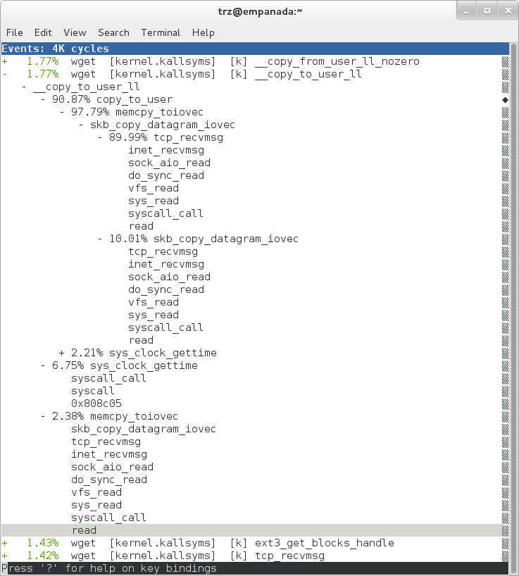
Using the call graph view, we can actually see not only which functions took the most time, but we can also see a summary of how those functions were called and learn something about how the program interacts with the kernel in the process.
Notice that each entry in the above screenshot now contains a + on the
left side. This means that we can expand the entry and drill down
into the call chains that feed into that entry. Pressing Enter on any
one of them will expand the call chain (you can also press E to expand
them all at the same time or C to collapse them all).
In the screenshot above, we've toggled the __copy_to_user_ll() entry
and several subnodes all the way down. This lets us see which call chains
contributed to the profiled __copy_to_user_ll() function which
contributed 1.77% to the total profile.
As a bit of background explanation for these call chains, think about
what happens at a high level when you run wget to get a file out on the
network. Basically what happens is that the data comes into the kernel
via the network connection (socket) and is passed to the user space
program wget (which is actually a part of BusyBox, but that's not
important for now), which takes the buffers the kernel passes to it and
writes it to a disk file to save it.
The part of this process that we're looking at in the above call stacks
is the part where the kernel passes the data it has read from the socket
down to wget i.e. a copy-to-user.
Notice also that here there's also a case where the hex value is
displayed in the call stack, here in the expanded sys_clock_gettime()
function. Later we'll see it resolve to a user space function call in
BusyBox.

The above screenshot shows the other half of the journey for the data ---
from the wget program's user space buffers to disk. To get the buffers to
disk, the wget program issues a write(2), which does a copy-from-user to
the kernel, which then takes care via some circuitous path (probably
also present somewhere in the profile data), to get it safely to disk.
Now that we've seen the basic layout of the profile data and the basics
of how to extract useful information out of it, let's get back to the
task at hand and see if we can get some basic idea about where the time
is spent in the program we're profiling, wget. Remember that wget is
actually implemented as an applet in BusyBox, so while the process name
is wget, the executable we're actually interested in is busybox.
Therefore, let's expand the first entry containing BusyBox:

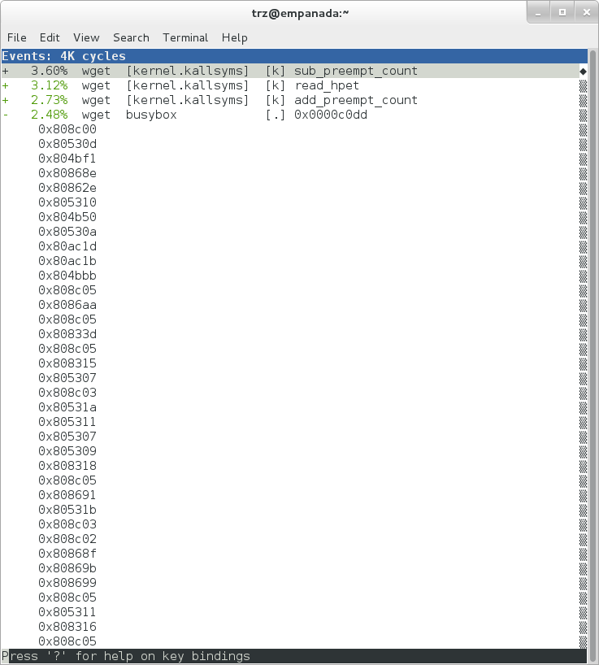
Again, before we expanded we saw that the function was labeled with a hex value instead of a symbol as with most of the kernel entries. Expanding the BusyBox entry doesn't make it any better.
The problem is that perf can't find the symbol information for the
busybox binary, which is actually stripped out by the Yocto build
system.
One way around that is to put the following in a configuration file when you build the image:
INHIBIT_PACKAGE_STRIP = "1"
However, we already have an image with the binaries stripped, so what can we do to get perf to resolve the symbols? Basically we need to install the debugging information for the BusyBox package.
To generate the debug info for the packages in the image, we can add
dbg-pkgs to EXTRA_IMAGE_FEATURES in
build/conf/local.conf. For example:
EXTRA_IMAGE_FEATURES:append = " dbg-pkgs"
Additionally, in order to generate the type of debugging information that perf understands, we also need to set PACKAGE_DEBUG_SPLIT_STYLE in a configuration file:
PACKAGE_DEBUG_SPLIT_STYLE = 'debug-file-directory'
Once we've done that, we can install the debugging information for BusyBox. The
debug packages once built can be found in build/tmp/deploy/rpm/*
on the host system. Find the busybox-dbg-...rpm file and copy it
to the target. For example:
[trz@empanada core2]$ scp /home/trz/yocto/crownbay-tracing-dbg/build/tmp/deploy/rpm/core2_32/busybox-dbg-1.20.2-r2.core2_32.rpm root@192.168.1.31:
busybox-dbg-1.20.2-r2.core2_32.rpm 100% 1826KB 1.8MB/s 00:01
Now install the debug RPM on the target:
root@crownbay:~# rpm -i busybox-dbg-1.20.2-r2.core2_32.rpm
Now that the debugging information is installed, we see that the BusyBox entries now display their functions symbolically:

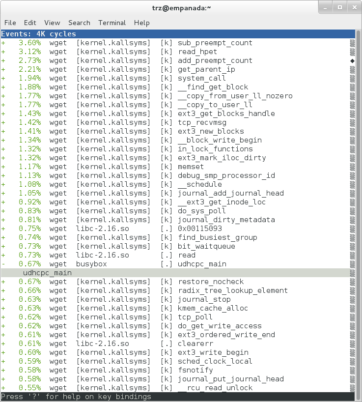
If we expand one of the entries and press Enter on a leaf node, we're
presented with a menu of actions we can take to get more information
related to that entry:

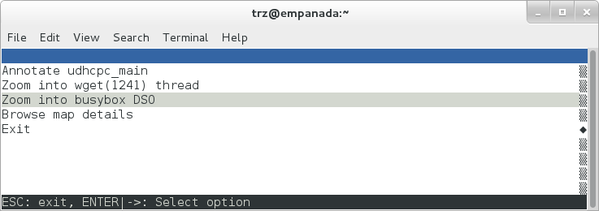
One of these actions allows us to show a view that displays a
busybox-centric view of the profiled functions (in this case we've also
expanded all the nodes using the E key):

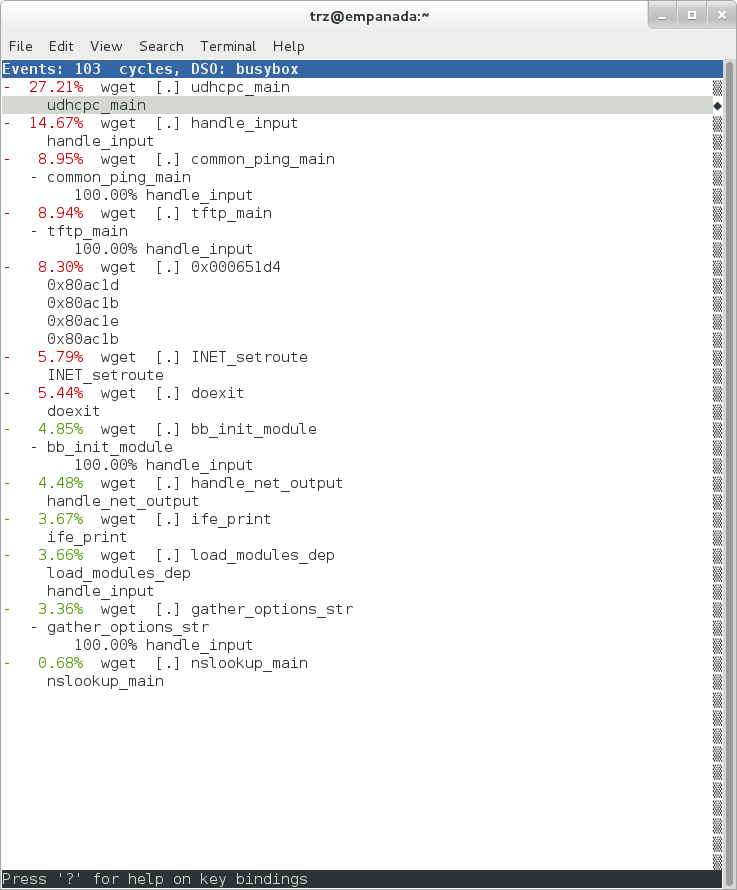
Finally, we can see that now that the BusyBox debugging information is installed,
the previously unresolved symbol in the sys_clock_gettime() entry
mentioned previously is now resolved, and shows that the
sys_clock_gettime system call that was the source of 6.75% of the
copy-to-user overhead was initiated by the handle_input() BusyBox
function:

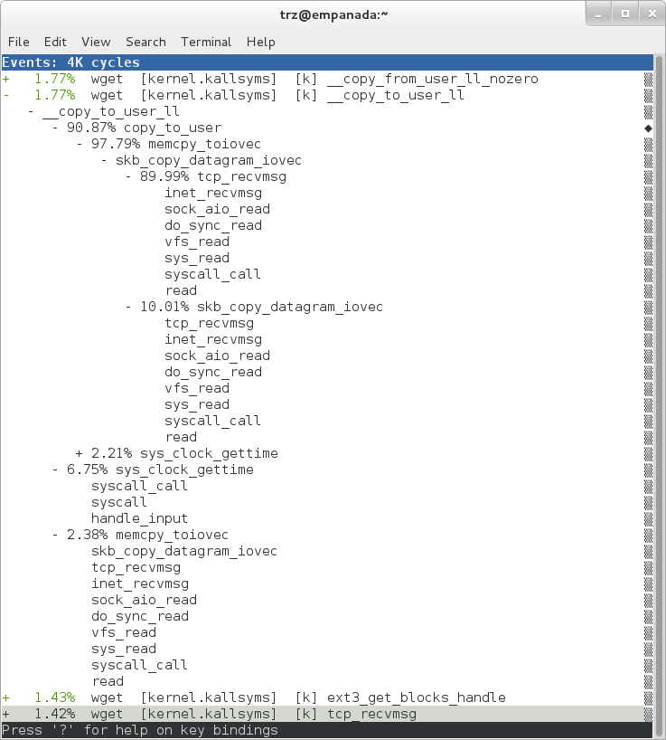
At the lowest level of detail, we can dive down to the assembly level
and see which instructions caused the most overhead in a function.
Pressing Enter on the udhcpc_main function, we're again presented
with a menu:

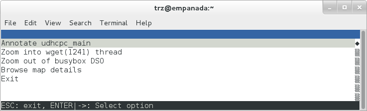
Selecting Annotate udhcpc_main, we get a detailed listing of
percentages by instruction for the udhcpc_main function. From the
display, we can see that over 50% of the time spent in this function is
taken up by a couple tests and the move of a constant (1) to a register:

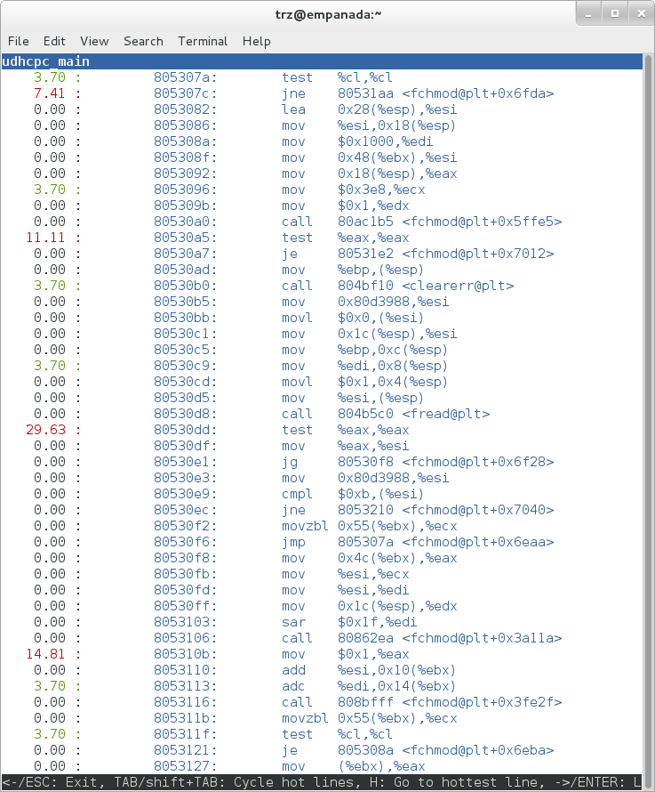
As a segue into tracing, let's try another profile using a different
counter, something other than the default cycles.
The tracing and profiling infrastructure in Linux has become unified in a way that allows us to use the same tool with a completely different set of counters, not just the standard hardware counters that traditional tools have had to restrict themselves to (the traditional tools can now actually make use of the expanded possibilities now available to them, and in some cases have, as mentioned previously).
We can get a list of the available events that can be used to profile a
workload via perf list:
root@crownbay:~# perf list
List of pre-defined events (to be used in -e):
cpu-cycles OR cycles [Hardware event]
stalled-cycles-frontend OR idle-cycles-frontend [Hardware event]
stalled-cycles-backend OR idle-cycles-backend [Hardware event]
instructions [Hardware event]
cache-references [Hardware event]
cache-misses [Hardware event]
branch-instructions OR branches [Hardware event]
branch-misses [Hardware event]
bus-cycles [Hardware event]
ref-cycles [Hardware event]
cpu-clock [Software event]
task-clock [Software event]
page-faults OR faults [Software event]
minor-faults [Software event]
major-faults [Software event]
context-switches OR cs [Software event]
cpu-migrations OR migrations [Software event]
alignment-faults [Software event]
emulation-faults [Software event]
L1-dcache-loads [Hardware cache event]
L1-dcache-load-misses [Hardware cache event]
L1-dcache-prefetch-misses [Hardware cache event]
L1-icache-loads [Hardware cache event]
L1-icache-load-misses [Hardware cache event]
.
.
.
rNNN [Raw hardware event descriptor]
cpu/t1=v1[,t2=v2,t3 ...]/modifier [Raw hardware event descriptor]
(see 'perf list --help' on how to encode it)
mem:<addr>[:access] [Hardware breakpoint]
sunrpc:rpc_call_status [Tracepoint event]
sunrpc:rpc_bind_status [Tracepoint event]
sunrpc:rpc_connect_status [Tracepoint event]
sunrpc:rpc_task_begin [Tracepoint event]
skb:kfree_skb [Tracepoint event]
skb:consume_skb [Tracepoint event]
skb:skb_copy_datagram_iovec [Tracepoint event]
net:net_dev_xmit [Tracepoint event]
net:net_dev_queue [Tracepoint event]
net:netif_receive_skb [Tracepoint event]
net:netif_rx [Tracepoint event]
napi:napi_poll [Tracepoint event]
sock:sock_rcvqueue_full [Tracepoint event]
sock:sock_exceed_buf_limit [Tracepoint event]
udp:udp_fail_queue_rcv_skb [Tracepoint event]
hda:hda_send_cmd [Tracepoint event]
hda:hda_get_response [Tracepoint event]
hda:hda_bus_reset [Tracepoint event]
scsi:scsi_dispatch_cmd_start [Tracepoint event]
scsi:scsi_dispatch_cmd_error [Tracepoint event]
scsi:scsi_eh_wakeup [Tracepoint event]
drm:drm_vblank_event [Tracepoint event]
drm:drm_vblank_event_queued [Tracepoint event]
drm:drm_vblank_event_delivered [Tracepoint event]
random:mix_pool_bytes [Tracepoint event]
random:mix_pool_bytes_nolock [Tracepoint event]
random:credit_entropy_bits [Tracepoint event]
gpio:gpio_direction [Tracepoint event]
gpio:gpio_value [Tracepoint event]
block:block_rq_abort [Tracepoint event]
block:block_rq_requeue [Tracepoint event]
block:block_rq_issue [Tracepoint event]
block:block_bio_bounce [Tracepoint event]
block:block_bio_complete [Tracepoint event]
block:block_bio_backmerge [Tracepoint event]
.
.
writeback:writeback_wake_thread [Tracepoint event]
writeback:writeback_wake_forker_thread [Tracepoint event]
writeback:writeback_bdi_register [Tracepoint event]
.
.
writeback:writeback_single_inode_requeue [Tracepoint event]
writeback:writeback_single_inode [Tracepoint event]
kmem:kmalloc [Tracepoint event]
kmem:kmem_cache_alloc [Tracepoint event]
kmem:mm_page_alloc [Tracepoint event]
kmem:mm_page_alloc_zone_locked [Tracepoint event]
kmem:mm_page_pcpu_drain [Tracepoint event]
kmem:mm_page_alloc_extfrag [Tracepoint event]
vmscan:mm_vmscan_kswapd_sleep [Tracepoint event]
vmscan:mm_vmscan_kswapd_wake [Tracepoint event]
vmscan:mm_vmscan_wakeup_kswapd [Tracepoint event]
vmscan:mm_vmscan_direct_reclaim_begin [Tracepoint event]
.
.
module:module_get [Tracepoint event]
module:module_put [Tracepoint event]
module:module_request [Tracepoint event]
sched:sched_kthread_stop [Tracepoint event]
sched:sched_wakeup [Tracepoint event]
sched:sched_wakeup_new [Tracepoint event]
sched:sched_process_fork [Tracepoint event]
sched:sched_process_exec [Tracepoint event]
sched:sched_stat_runtime [Tracepoint event]
rcu:rcu_utilization [Tracepoint event]
workqueue:workqueue_queue_work [Tracepoint event]
workqueue:workqueue_execute_end [Tracepoint event]
signal:signal_generate [Tracepoint event]
signal:signal_deliver [Tracepoint event]
timer:timer_init [Tracepoint event]
timer:timer_start [Tracepoint event]
timer:hrtimer_cancel [Tracepoint event]
timer:itimer_state [Tracepoint event]
timer:itimer_expire [Tracepoint event]
irq:irq_handler_entry [Tracepoint event]
irq:irq_handler_exit [Tracepoint event]
irq:softirq_entry [Tracepoint event]
irq:softirq_exit [Tracepoint event]
irq:softirq_raise [Tracepoint event]
printk:console [Tracepoint event]
task:task_newtask [Tracepoint event]
task:task_rename [Tracepoint event]
syscalls:sys_enter_socketcall [Tracepoint event]
syscalls:sys_exit_socketcall [Tracepoint event]
.
.
.
syscalls:sys_enter_unshare [Tracepoint event]
syscalls:sys_exit_unshare [Tracepoint event]
raw_syscalls:sys_enter [Tracepoint event]
raw_syscalls:sys_exit [Tracepoint event]
Only a subset of these would be of interest to us when looking at this
workload, so let's choose the most likely subsystems (identified by the
string before the colon in the Tracepoint events) and do a perf stat
run using only those subsystem wildcards:
root@crownbay:~# perf stat -e skb:* -e net:* -e napi:* -e sched:* -e workqueue:* -e irq:* -e syscalls:* wget https://downloads.yoctoproject.org/mirror/sources/linux-2.6.19.2.tar.bz2
Performance counter stats for 'wget https://downloads.yoctoproject.org/mirror/sources/linux-2.6.19.2.tar.bz2':
23323 skb:kfree_skb
0 skb:consume_skb
49897 skb:skb_copy_datagram_iovec
6217 net:net_dev_xmit
6217 net:net_dev_queue
7962 net:netif_receive_skb
2 net:netif_rx
8340 napi:napi_poll
0 sched:sched_kthread_stop
0 sched:sched_kthread_stop_ret
3749 sched:sched_wakeup
0 sched:sched_wakeup_new
0 sched:sched_switch
29 sched:sched_migrate_task
0 sched:sched_process_free
1 sched:sched_process_exit
0 sched:sched_wait_task
0 sched:sched_process_wait
0 sched:sched_process_fork
1 sched:sched_process_exec
0 sched:sched_stat_wait
2106519415641 sched:sched_stat_sleep
0 sched:sched_stat_iowait
147453613 sched:sched_stat_blocked
12903026955 sched:sched_stat_runtime
0 sched:sched_pi_setprio
3574 workqueue:workqueue_queue_work
3574 workqueue:workqueue_activate_work
0 workqueue:workqueue_execute_start
0 workqueue:workqueue_execute_end
16631 irq:irq_handler_entry
16631 irq:irq_handler_exit
28521 irq:softirq_entry
28521 irq:softirq_exit
28728 irq:softirq_raise
1 syscalls:sys_enter_sendmmsg
1 syscalls:sys_exit_sendmmsg
0 syscalls:sys_enter_recvmmsg
0 syscalls:sys_exit_recvmmsg
14 syscalls:sys_enter_socketcall
14 syscalls:sys_exit_socketcall
.
.
.
16965 syscalls:sys_enter_read
16965 syscalls:sys_exit_read
12854 syscalls:sys_enter_write
12854 syscalls:sys_exit_write
.
.
.
58.029710972 seconds time elapsed
Let's pick one of these tracepoints and tell perf to do a profile using it as the sampling event:
root@crownbay:~# perf record -g -e sched:sched_wakeup wget https://downloads.yoctoproject.org/mirror/sources/linux-2.6.19.2.tar.bz2

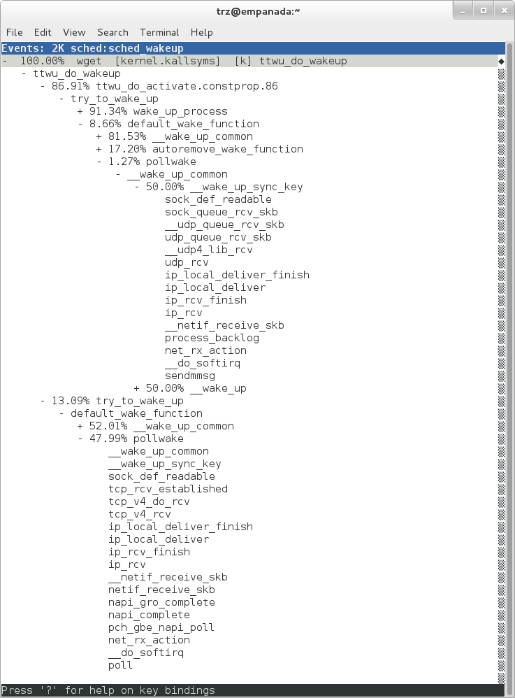
The screenshot above shows the results of running a profile using
sched:sched_switch tracepoint, which shows the relative costs of various
paths to sched_wakeup (note that sched_wakeup is the name of the
tracepoint --- it's actually defined just inside ttwu_do_wakeup(), which
accounts for the function name actually displayed in the profile:
/*
* Mark the task runnable and perform wakeup-preemption.
*/
static void
ttwu_do_wakeup(struct rq *rq, struct task_struct *p, int wake_flags)
{
trace_sched_wakeup(p, true);
.
.
.
}
A couple of the more interesting call chains are expanded and displayed above, basically some network receive paths that presumably end up waking up wget (BusyBox) when network data is ready.
Note that because tracepoints are normally used for tracing, the default
sampling period for tracepoints is 1 i.e. for tracepoints perf will
sample on every event occurrence (this can be changed using the -c
option). This is in contrast to hardware counters such as for example
the default cycles hardware counter used for normal profiling, where
sampling periods are much higher (in the thousands) because profiling
should have as low an overhead as possible and sampling on every cycle
would be prohibitively expensive.
3.1.2.2 Using perf to do Basic Tracing
Profiling is a great tool for solving many problems or for getting a
high-level view of what's going on with a workload or across the system.
It is however by definition an approximation, as suggested by the most
prominent word associated with it, sampling. On the one hand, it
allows a representative picture of what's going on in the system to be
cheaply taken, but alternatively, that cheapness limits its utility
when that data suggests a need to "dive down" more deeply to discover
what's really going on. In such cases, the only way to see what's really
going on is to be able to look at (or summarize more intelligently) the
individual steps that go into the higher-level behavior exposed by the
coarse-grained profiling data.
As a concrete example, we can trace all the events we think might be applicable to our workload:
root@crownbay:~# perf record -g -e skb:* -e net:* -e napi:* -e sched:sched_switch -e sched:sched_wakeup -e irq:*
-e syscalls:sys_enter_read -e syscalls:sys_exit_read -e syscalls:sys_enter_write -e syscalls:sys_exit_write
wget https://downloads.yoctoproject.org/mirror/sources/linux-2.6.19.2.tar.bz2
We can look at the raw trace output using perf script with no
arguments:
root@crownbay:~# perf script
perf 1262 [000] 11624.857082: sys_exit_read: 0x0
perf 1262 [000] 11624.857193: sched_wakeup: comm=migration/0 pid=6 prio=0 success=1 target_cpu=000
wget 1262 [001] 11624.858021: softirq_raise: vec=1 [action=TIMER]
wget 1262 [001] 11624.858074: softirq_entry: vec=1 [action=TIMER]
wget 1262 [001] 11624.858081: softirq_exit: vec=1 [action=TIMER]
wget 1262 [001] 11624.858166: sys_enter_read: fd: 0x0003, buf: 0xbf82c940, count: 0x0200
wget 1262 [001] 11624.858177: sys_exit_read: 0x200
wget 1262 [001] 11624.858878: kfree_skb: skbaddr=0xeb248d80 protocol=0 location=0xc15a5308
wget 1262 [001] 11624.858945: kfree_skb: skbaddr=0xeb248000 protocol=0 location=0xc15a5308
wget 1262 [001] 11624.859020: softirq_raise: vec=1 [action=TIMER]
wget 1262 [001] 11624.859076: softirq_entry: vec=1 [action=TIMER]
wget 1262 [001] 11624.859083: softirq_exit: vec=1 [action=TIMER]
wget 1262 [001] 11624.859167: sys_enter_read: fd: 0x0003, buf: 0xb7720000, count: 0x0400
wget 1262 [001] 11624.859192: sys_exit_read: 0x1d7
wget 1262 [001] 11624.859228: sys_enter_read: fd: 0x0003, buf: 0xb7720000, count: 0x0400
wget 1262 [001] 11624.859233: sys_exit_read: 0x0
wget 1262 [001] 11624.859573: sys_enter_read: fd: 0x0003, buf: 0xbf82c580, count: 0x0200
wget 1262 [001] 11624.859584: sys_exit_read: 0x200
wget 1262 [001] 11624.859864: sys_enter_read: fd: 0x0003, buf: 0xb7720000, count: 0x0400
wget 1262 [001] 11624.859888: sys_exit_read: 0x400
wget 1262 [001] 11624.859935: sys_enter_read: fd: 0x0003, buf: 0xb7720000, count: 0x0400
wget 1262 [001] 11624.859944: sys_exit_read: 0x400
This gives us a detailed timestamped sequence of events that occurred within the workload with respect to those events.
In many ways, profiling can be viewed as a subset of tracing --- theoretically, if you have a set of trace events that's sufficient to capture all the important aspects of a workload, you can derive any of the results or views that a profiling run can.
Another aspect of traditional profiling is that while powerful in many ways, it's limited by the granularity of the underlying data. Profiling tools offer various ways of sorting and presenting the sample data, which make it much more useful and amenable to user experimentation, but in the end it can't be used in an open-ended way to extract data that just isn't present as a consequence of the fact that conceptually, most of it has been thrown away.
Full-blown detailed tracing data does however offer the opportunity to manipulate and present the information collected during a tracing run in an infinite variety of ways.
Another way to look at it is that there are only so many ways that the
'primitive' counters can be used on their own to generate interesting
output; to get anything more complicated than simple counts requires
some amount of additional logic, which is typically specific to the
problem at hand. For example, if we wanted to make use of a 'counter'
that maps to the value of the time difference between when a process was
scheduled to run on a processor and the time it actually ran, we
wouldn't expect such a counter to exist on its own, but we could derive
one called say wakeup_latency and use it to extract a useful view of
that metric from trace data. Likewise, we really can't figure out from
standard profiling tools how much data every process on the system reads
and writes, along with how many of those reads and writes fail
completely. If we have sufficient trace data, however, we could with the
right tools easily extract and present that information, but we'd need
something other than ready-made profiling tools to do that.
Luckily, there is a general-purpose way to handle such needs, called "programming languages". Making programming languages easily available to apply to such problems given the specific format of data is called a 'programming language binding' for that data and language. perf supports two programming language bindings, one for Python and one for Perl.
Now that we have the trace data in perf.data, we can use perf script
-g to generate a skeleton script with handlers for the read / write
entry / exit events we recorded:
root@crownbay:~# perf script -g python
generated Python script: perf-script.py
The skeleton script just creates a Python function for each event type in the
perf.data file. The body of each function just prints the event name along
with its parameters. For example:
def net__netif_rx(event_name, context, common_cpu,
common_secs, common_nsecs, common_pid, common_comm,
skbaddr, len, name):
print_header(event_name, common_cpu, common_secs, common_nsecs,
common_pid, common_comm)
print "skbaddr=%u, len=%u, name=%s\n" % (skbaddr, len, name),
We can run that script directly to print all of the events contained in the
perf.data file:
root@crownbay:~# perf script -s perf-script.py
in trace_begin
syscalls__sys_exit_read 0 11624.857082795 1262 perf nr=3, ret=0
sched__sched_wakeup 0 11624.857193498 1262 perf comm=migration/0, pid=6, prio=0, success=1, target_cpu=0
irq__softirq_raise 1 11624.858021635 1262 wget vec=TIMER
irq__softirq_entry 1 11624.858074075 1262 wget vec=TIMER
irq__softirq_exit 1 11624.858081389 1262 wget vec=TIMER
syscalls__sys_enter_read 1 11624.858166434 1262 wget nr=3, fd=3, buf=3213019456, count=512
syscalls__sys_exit_read 1 11624.858177924 1262 wget nr=3, ret=512
skb__kfree_skb 1 11624.858878188 1262 wget skbaddr=3945041280, location=3243922184, protocol=0
skb__kfree_skb 1 11624.858945608 1262 wget skbaddr=3945037824, location=3243922184, protocol=0
irq__softirq_raise 1 11624.859020942 1262 wget vec=TIMER
irq__softirq_entry 1 11624.859076935 1262 wget vec=TIMER
irq__softirq_exit 1 11624.859083469 1262 wget vec=TIMER
syscalls__sys_enter_read 1 11624.859167565 1262 wget nr=3, fd=3, buf=3077701632, count=1024
syscalls__sys_exit_read 1 11624.859192533 1262 wget nr=3, ret=471
syscalls__sys_enter_read 1 11624.859228072 1262 wget nr=3, fd=3, buf=3077701632, count=1024
syscalls__sys_exit_read 1 11624.859233707 1262 wget nr=3, ret=0
syscalls__sys_enter_read 1 11624.859573008 1262 wget nr=3, fd=3, buf=3213018496, count=512
syscalls__sys_exit_read 1 11624.859584818 1262 wget nr=3, ret=512
syscalls__sys_enter_read 1 11624.859864562 1262 wget nr=3, fd=3, buf=3077701632, count=1024
syscalls__sys_exit_read 1 11624.859888770 1262 wget nr=3, ret=1024
syscalls__sys_enter_read 1 11624.859935140 1262 wget nr=3, fd=3, buf=3077701632, count=1024
syscalls__sys_exit_read 1 11624.859944032 1262 wget nr=3, ret=1024
That in itself isn't very useful; after all, we can accomplish pretty much the
same thing by just running perf script without arguments in the same
directory as the perf.data file.
We can however replace the print statements in the generated function bodies with whatever we want, and thereby make it infinitely more useful.
As a simple example, let's just replace the print statements in the function bodies with a simple function that does nothing but increment a per-event count. When the program is run against a perf.data file, each time a particular event is encountered, a tally is incremented for that event. For example:
def net__netif_rx(event_name, context, common_cpu,
common_secs, common_nsecs, common_pid, common_comm,
skbaddr, len, name):
inc_counts(event_name)
Each event handler function in the generated code
is modified to do this. For convenience, we define a common function
called inc_counts() that each handler calls; inc_counts() just tallies
a count for each event using the counts hash, which is a specialized
hash function that does Perl-like autovivification, a capability that's
extremely useful for kinds of multi-level aggregation commonly used in
processing traces (see perf's documentation on the Python language
binding for details):
counts = autodict()
def inc_counts(event_name):
try:
counts[event_name] += 1
except TypeError:
counts[event_name] = 1
Finally, at the end of the trace processing run, we want to print the
result of all the per-event tallies. For that, we use the special
trace_end() function:
def trace_end():
for event_name, count in counts.iteritems():
print "%-40s %10s\n" % (event_name, count)
The end result is a summary of all the events recorded in the trace:
skb__skb_copy_datagram_iovec 13148
irq__softirq_entry 4796
irq__irq_handler_exit 3805
irq__softirq_exit 4795
syscalls__sys_enter_write 8990
net__net_dev_xmit 652
skb__kfree_skb 4047
sched__sched_wakeup 1155
irq__irq_handler_entry 3804
irq__softirq_raise 4799
net__net_dev_queue 652
syscalls__sys_enter_read 17599
net__netif_receive_skb 1743
syscalls__sys_exit_read 17598
net__netif_rx 2
napi__napi_poll 1877
syscalls__sys_exit_write 8990
Note that this is
pretty much exactly the same information we get from perf stat, which
goes a little way to support the idea mentioned previously that given
the right kind of trace data, higher-level profiling-type summaries can
be derived from it.
Documentation on using the 'perf script' Python binding.
3.1.2.3 System-Wide Tracing and Profiling
The examples so far have focused on tracing a particular program or
workload --- that is, every profiling run has specified the program
to profile in the command-line e.g. perf record wget ....
It's also possible, and more interesting in many cases, to run a system-wide profile or trace while running the workload in a separate shell.
To do system-wide profiling or tracing, you typically use the -a flag to
perf record.
To demonstrate this, open up one window and start the profile using the
-a flag (press Ctrl-C to stop tracing):
root@crownbay:~# perf record -g -a
^C[ perf record: Woken up 6 times to write data ]
[ perf record: Captured and wrote 1.400 MB perf.data (~61172 samples) ]
In another window, run the wget test:
root@crownbay:~# wget https://downloads.yoctoproject.org/mirror/sources/linux-2.6.19.2.tar.bz2
Connecting to downloads.yoctoproject.org (140.211.169.59:80)
linux-2.6.19.2.tar.b 100% \|*******************************\| 41727k 0:00:00 ETA
Here we see entries not only for our wget load, but for
other processes running on the system as well:

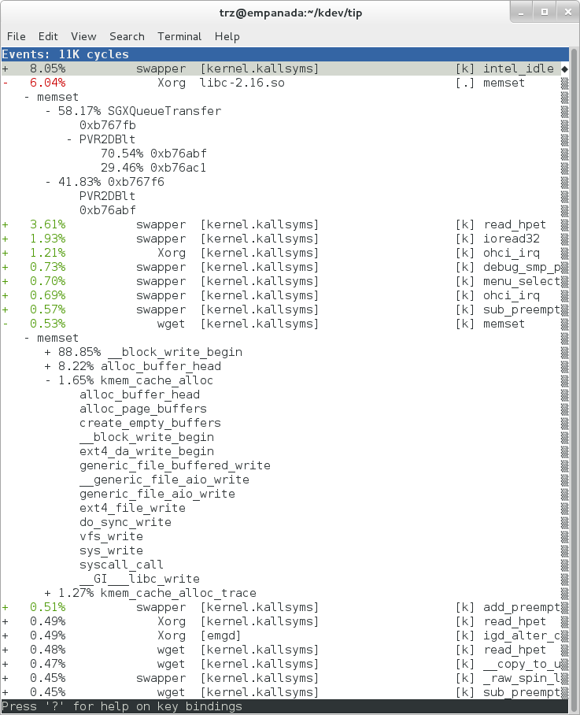
In the snapshot above, we can see call chains that originate in libc, and
a call chain from Xorg that demonstrates that we're using a proprietary X
driver in user space (notice the presence of PVR and some other
unresolvable symbols in the expanded Xorg call chain).
Note also that we have both kernel and user space entries in the above
snapshot. We can also tell perf to focus on user space but providing a
modifier, in this case u, to the cycles hardware counter when we
record a profile:
root@crownbay:~# perf record -g -a -e cycles:u
^C[ perf record: Woken up 2 times to write data ]
[ perf record: Captured and wrote 0.376 MB perf.data (~16443 samples) ]

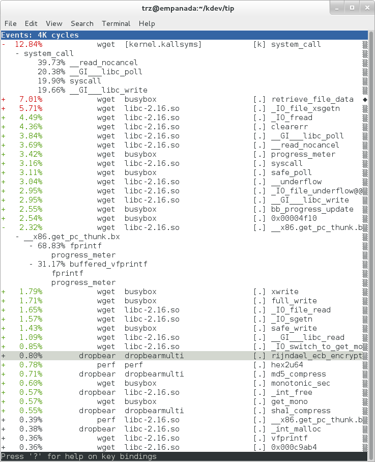
Notice in the screenshot above, we see only user space entries ([.])
Finally, we can press Enter on a leaf node and select the Zoom into
DSO menu item to show only entries associated with a specific DSO. In
the screenshot below, we've zoomed into the libc DSO which shows all
the entries associated with the libc-xxx.so DSO.

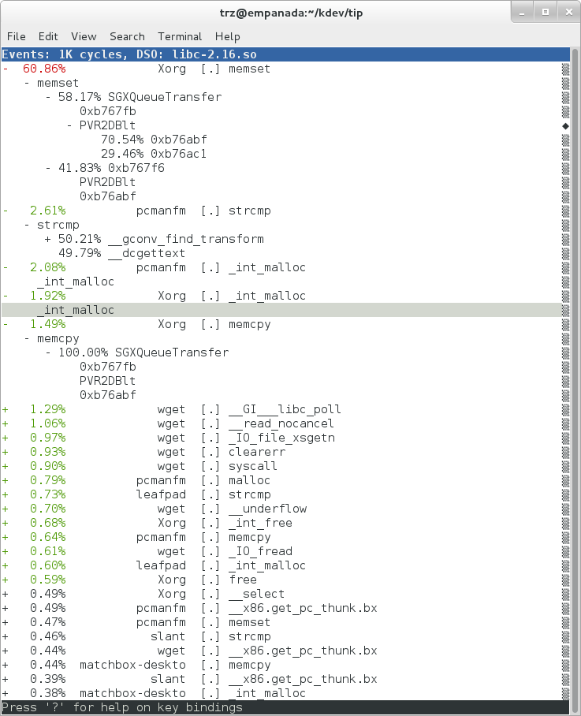
We can also use the system-wide -a switch to do system-wide tracing.
Here we'll trace a couple of scheduler events:
root@crownbay:~# perf record -a -e sched:sched_switch -e sched:sched_wakeup
^C[ perf record: Woken up 38 times to write data ]
[ perf record: Captured and wrote 9.780 MB perf.data (~427299 samples) ]
We can look at the raw output using perf script with no arguments:
root@crownbay:~# perf script
perf 1383 [001] 6171.460045: sched_wakeup: comm=kworker/1:1 pid=21 prio=120 success=1 target_cpu=001
perf 1383 [001] 6171.460066: sched_switch: prev_comm=perf prev_pid=1383 prev_prio=120 prev_state=R+ ==> next_comm=kworker/1:1 next_pid=21 next_prio=120
kworker/1:1 21 [001] 6171.460093: sched_switch: prev_comm=kworker/1:1 prev_pid=21 prev_prio=120 prev_state=S ==> next_comm=perf next_pid=1383 next_prio=120
swapper 0 [000] 6171.468063: sched_wakeup: comm=kworker/0:3 pid=1209 prio=120 success=1 target_cpu=000
swapper 0 [000] 6171.468107: sched_switch: prev_comm=swapper/0 prev_pid=0 prev_prio=120 prev_state=R ==> next_comm=kworker/0:3 next_pid=1209 next_prio=120
kworker/0:3 1209 [000] 6171.468143: sched_switch: prev_comm=kworker/0:3 prev_pid=1209 prev_prio=120 prev_state=S ==> next_comm=swapper/0 next_pid=0 next_prio=120
perf 1383 [001] 6171.470039: sched_wakeup: comm=kworker/1:1 pid=21 prio=120 success=1 target_cpu=001
perf 1383 [001] 6171.470058: sched_switch: prev_comm=perf prev_pid=1383 prev_prio=120 prev_state=R+ ==> next_comm=kworker/1:1 next_pid=21 next_prio=120
kworker/1:1 21 [001] 6171.470082: sched_switch: prev_comm=kworker/1:1 prev_pid=21 prev_prio=120 prev_state=S ==> next_comm=perf next_pid=1383 next_prio=120
perf 1383 [001] 6171.480035: sched_wakeup: comm=kworker/1:1 pid=21 prio=120 success=1 target_cpu=001
3.1.2.3.1 Filtering
Notice that there are many events that don't really have anything to
do with what we're interested in, namely events that schedule perf
itself in and out or that wake perf up. We can get rid of those by using
the --filter option --- for each event we specify using -e, we can add a
--filter after that to filter out trace events that contain fields with
specific values:
root@crownbay:~# perf record -a -e sched:sched_switch --filter 'next_comm != perf && prev_comm != perf' -e sched:sched_wakeup --filter 'comm != perf'
^C[ perf record: Woken up 38 times to write data ]
[ perf record: Captured and wrote 9.688 MB perf.data (~423279 samples) ]
root@crownbay:~# perf script
swapper 0 [000] 7932.162180: sched_switch: prev_comm=swapper/0 prev_pid=0 prev_prio=120 prev_state=R ==> next_comm=kworker/0:3 next_pid=1209 next_prio=120
kworker/0:3 1209 [000] 7932.162236: sched_switch: prev_comm=kworker/0:3 prev_pid=1209 prev_prio=120 prev_state=S ==> next_comm=swapper/0 next_pid=0 next_prio=120
perf 1407 [001] 7932.170048: sched_wakeup: comm=kworker/1:1 pid=21 prio=120 success=1 target_cpu=001
perf 1407 [001] 7932.180044: sched_wakeup: comm=kworker/1:1 pid=21 prio=120 success=1 target_cpu=001
perf 1407 [001] 7932.190038: sched_wakeup: comm=kworker/1:1 pid=21 prio=120 success=1 target_cpu=001
perf 1407 [001] 7932.200044: sched_wakeup: comm=kworker/1:1 pid=21 prio=120 success=1 target_cpu=001
perf 1407 [001] 7932.210044: sched_wakeup: comm=kworker/1:1 pid=21 prio=120 success=1 target_cpu=001
perf 1407 [001] 7932.220044: sched_wakeup: comm=kworker/1:1 pid=21 prio=120 success=1 target_cpu=001
swapper 0 [001] 7932.230111: sched_wakeup: comm=kworker/1:1 pid=21 prio=120 success=1 target_cpu=001
swapper 0 [001] 7932.230146: sched_switch: prev_comm=swapper/1 prev_pid=0 prev_prio=120 prev_state=R ==> next_comm=kworker/1:1 next_pid=21 next_prio=120
kworker/1:1 21 [001] 7932.230205: sched_switch: prev_comm=kworker/1:1 prev_pid=21 prev_prio=120 prev_state=S ==> next_comm=swapper/1 next_pid=0 next_prio=120
swapper 0 [000] 7932.326109: sched_wakeup: comm=kworker/0:3 pid=1209 prio=120 success=1 target_cpu=000
swapper 0 [000] 7932.326171: sched_switch: prev_comm=swapper/0 prev_pid=0 prev_prio=120 prev_state=R ==> next_comm=kworker/0:3 next_pid=1209 next_prio=120
kworker/0:3 1209 [000] 7932.326214: sched_switch: prev_comm=kworker/0:3 prev_pid=1209 prev_prio=120 prev_state=S ==> next_comm=swapper/0 next_pid=0 next_prio=120
In this case, we've filtered out all events that have
perf in their comm, comm_prev or comm_next fields. Notice that
there are still events recorded for perf, but notice that those events
don't have values of perf for the filtered fields. To completely
filter out anything from perf will require a bit more work, but for the
purpose of demonstrating how to use filters, it's close enough.
3.1.2.4 Using Dynamic Tracepoints
perf isn't restricted to the fixed set of static tracepoints listed by
perf list. Users can also add their own "dynamic" tracepoints anywhere
in the kernel. For example, suppose we want to define our own
tracepoint on do_fork(). We can do that using the perf probe perf
subcommand:
root@crownbay:~# perf probe do_fork
Added new event:
probe:do_fork (on do_fork)
You can now use it in all perf tools, such as:
perf record -e probe:do_fork -aR sleep 1
Adding a new tracepoint via
perf probe results in an event with all the expected files and format
in /sys/kernel/debug/tracing/events, just the same as for static
tracepoints (as discussed in more detail in the trace events subsystem
section:
root@crownbay:/sys/kernel/debug/tracing/events/probe/do_fork# ls -al
drwxr-xr-x 2 root root 0 Oct 28 11:42 .
drwxr-xr-x 3 root root 0 Oct 28 11:42 ..
-rw-r--r-- 1 root root 0 Oct 28 11:42 enable
-rw-r--r-- 1 root root 0 Oct 28 11:42 filter
-r--r--r-- 1 root root 0 Oct 28 11:42 format
-r--r--r-- 1 root root 0 Oct 28 11:42 id
root@crownbay:/sys/kernel/debug/tracing/events/probe/do_fork# cat format
name: do_fork
ID: 944
format:
field:unsigned short common_type; offset:0; size:2; signed:0;
field:unsigned char common_flags; offset:2; size:1; signed:0;
field:unsigned char common_preempt_count; offset:3; size:1; signed:0;
field:int common_pid; offset:4; size:4; signed:1;
field:int common_padding; offset:8; size:4; signed:1;
field:unsigned long __probe_ip; offset:12; size:4; signed:0;
print fmt: "(%lx)", REC->__probe_ip
We can list all dynamic tracepoints currently in existence:
root@crownbay:~# perf probe -l
probe:do_fork (on do_fork)
probe:schedule (on schedule)
Let's record system-wide (sleep 30 is a
trick for recording system-wide but basically do nothing and then wake
up after 30 seconds):
root@crownbay:~# perf record -g -a -e probe:do_fork sleep 30
[ perf record: Woken up 1 times to write data ]
[ perf record: Captured and wrote 0.087 MB perf.data (~3812 samples) ]
Using perf script we can see each do_fork event that fired:
root@crownbay:~# perf script
# ========
# captured on: Sun Oct 28 11:55:18 2012
# hostname : crownbay
# os release : 3.4.11-yocto-standard
# perf version : 3.4.11
# arch : i686
# nrcpus online : 2
# nrcpus avail : 2
# cpudesc : Intel(R) Atom(TM) CPU E660 @ 1.30GHz
# cpuid : GenuineIntel,6,38,1
# total memory : 1017184 kB
# cmdline : /usr/bin/perf record -g -a -e probe:do_fork sleep 30
# event : name = probe:do_fork, type = 2, config = 0x3b0, config1 = 0x0, config2 = 0x0, excl_usr = 0, excl_kern
= 0, id = { 5, 6 }
# HEADER_CPU_TOPOLOGY info available, use -I to display
# ========
#
matchbox-deskto 1197 [001] 34211.378318: do_fork: (c1028460)
matchbox-deskto 1295 [001] 34211.380388: do_fork: (c1028460)
pcmanfm 1296 [000] 34211.632350: do_fork: (c1028460)
pcmanfm 1296 [000] 34211.639917: do_fork: (c1028460)
matchbox-deskto 1197 [001] 34217.541603: do_fork: (c1028460)
matchbox-deskto 1299 [001] 34217.543584: do_fork: (c1028460)
gthumb 1300 [001] 34217.697451: do_fork: (c1028460)
gthumb 1300 [001] 34219.085734: do_fork: (c1028460)
gthumb 1300 [000] 34219.121351: do_fork: (c1028460)
gthumb 1300 [001] 34219.264551: do_fork: (c1028460)
pcmanfm 1296 [000] 34219.590380: do_fork: (c1028460)
matchbox-deskto 1197 [001] 34224.955965: do_fork: (c1028460)
matchbox-deskto 1306 [001] 34224.957972: do_fork: (c1028460)
matchbox-termin 1307 [000] 34225.038214: do_fork: (c1028460)
matchbox-termin 1307 [001] 34225.044218: do_fork: (c1028460)
matchbox-termin 1307 [000] 34225.046442: do_fork: (c1028460)
matchbox-deskto 1197 [001] 34237.112138: do_fork: (c1028460)
matchbox-deskto 1311 [001] 34237.114106: do_fork: (c1028460)
gaku 1312 [000] 34237.202388: do_fork: (c1028460)
And using perf report on the same file, we can see the
call graphs from starting a few programs during those 30 seconds:

3.1.3 perf Documentation
Online versions of the manual pages for the commands discussed in this section can be found here:
Documentation on using the 'perf script' Python binding.
The top-level perf(1) manual page.
Normally, you should be able to open the manual pages via perf itself
e.g. perf help or perf help record.
To have the perf manual pages installed on your target, modify your configuration as follows:
IMAGE_INSTALL:append = " perf perf-doc"
DISTRO_FEATURES:append = " api-documentation"
The manual pages in text form, along with some other files, such as a set
of examples, can also be found in the perf directory of the kernel tree:
tools/perf/Documentation
There's also a nice perf tutorial on the perf wiki that goes into more detail than we do here in certain areas: perf Tutorial
3.2 ftrace
"ftrace" literally refers to the "ftrace function tracer" but in reality this encompasses several related tracers along with the infrastructure that they all make use of.
3.2.1 ftrace Setup
For this section, we'll assume you've already performed the basic setup outlined in the "General Setup" section.
ftrace, trace-cmd, and KernelShark run on the target system, and are
ready to go out-of-the-box --- no additional setup is necessary. For the
rest of this section we assume you're connected to the host through SSH and
will be running ftrace on the target. KernelShark is a GUI application and if
you use the -X option to ssh you can have the KernelShark GUI run on
the target but display remotely on the host if you want.
3.2.2 Basic ftrace usage
"ftrace" essentially refers to everything included in the /tracing
directory of the mounted debugfs filesystem (Yocto follows the standard
convention and mounts it at /sys/kernel/debug). All the files found in
/sys/kernel/debug/tracing on a Yocto system are:
root@sugarbay:/sys/kernel/debug/tracing# ls
README kprobe_events trace
available_events kprobe_profile trace_clock
available_filter_functions options trace_marker
available_tracers per_cpu trace_options
buffer_size_kb printk_formats trace_pipe
buffer_total_size_kb saved_cmdlines tracing_cpumask
current_tracer set_event tracing_enabled
dyn_ftrace_total_info set_ftrace_filter tracing_on
enabled_functions set_ftrace_notrace tracing_thresh
events set_ftrace_pid
free_buffer set_graph_function
The files listed above are used for various purposes --- some relate directly to the tracers themselves, others are used to set tracing options, and yet others actually contain the tracing output when a tracer is in effect. Some of the functions can be guessed from their names, others need explanation; in any case, we'll cover some of the files we see here below but for an explanation of the others, please see the ftrace documentation.
We'll start by looking at some of the available built-in tracers.
The available_tracers file lists the set of available tracers:
root@sugarbay:/sys/kernel/debug/tracing# cat available_tracers
blk function_graph function nop
The current_tracer file contains the tracer currently in effect:
root@sugarbay:/sys/kernel/debug/tracing# cat current_tracer
nop
The above listing of current_tracer shows that the
nop tracer is in effect, which is just another way of saying that
there's actually no tracer currently in effect.
Writing one of the available tracers into current_tracer makes the
specified tracer the current tracer:
root@sugarbay:/sys/kernel/debug/tracing# echo function > current_tracer
root@sugarbay:/sys/kernel/debug/tracing# cat current_tracer
function
The above sets the current tracer to be the function tracer. This tracer
traces every function call in the kernel and makes it available as the
contents of the trace file. Reading the trace file lists the
currently buffered function calls that have been traced by the function
tracer:
root@sugarbay:/sys/kernel/debug/tracing# cat trace | less
# tracer: function
#
# entries-in-buffer/entries-written: 310629/766471 #P:8
#
# _-----=> irqs-off
# / _----=> need-resched
# | / _---=> hardirq/softirq
# || / _--=> preempt-depth
# ||| / delay
# TASK-PID CPU# |||| TIMESTAMP FUNCTION
# | | | |||| | |
<idle>-0 [004] d..1 470.867169: ktime_get_real <-intel_idle
<idle>-0 [004] d..1 470.867170: getnstimeofday <-ktime_get_real
<idle>-0 [004] d..1 470.867171: ns_to_timeval <-intel_idle
<idle>-0 [004] d..1 470.867171: ns_to_timespec <-ns_to_timeval
<idle>-0 [004] d..1 470.867172: smp_apic_timer_interrupt <-apic_timer_interrupt
<idle>-0 [004] d..1 470.867172: native_apic_mem_write <-smp_apic_timer_interrupt
<idle>-0 [004] d..1 470.867172: irq_enter <-smp_apic_timer_interrupt
<idle>-0 [004] d..1 470.867172: rcu_irq_enter <-irq_enter
<idle>-0 [004] d..1 470.867173: rcu_idle_exit_common.isra.33 <-rcu_irq_enter
<idle>-0 [004] d..1 470.867173: local_bh_disable <-irq_enter
<idle>-0 [004] d..1 470.867173: add_preempt_count <-local_bh_disable
<idle>-0 [004] d.s1 470.867174: tick_check_idle <-irq_enter
<idle>-0 [004] d.s1 470.867174: tick_check_oneshot_broadcast <-tick_check_idle
<idle>-0 [004] d.s1 470.867174: ktime_get <-tick_check_idle
<idle>-0 [004] d.s1 470.867174: tick_nohz_stop_idle <-tick_check_idle
<idle>-0 [004] d.s1 470.867175: update_ts_time_stats <-tick_nohz_stop_idle
<idle>-0 [004] d.s1 470.867175: nr_iowait_cpu <-update_ts_time_stats
<idle>-0 [004] d.s1 470.867175: tick_do_update_jiffies64 <-tick_check_idle
<idle>-0 [004] d.s1 470.867175: _raw_spin_lock <-tick_do_update_jiffies64
<idle>-0 [004] d.s1 470.867176: add_preempt_count <-_raw_spin_lock
<idle>-0 [004] d.s2 470.867176: do_timer <-tick_do_update_jiffies64
<idle>-0 [004] d.s2 470.867176: _raw_spin_lock <-do_timer
<idle>-0 [004] d.s2 470.867176: add_preempt_count <-_raw_spin_lock
<idle>-0 [004] d.s3 470.867177: ntp_tick_length <-do_timer
<idle>-0 [004] d.s3 470.867177: _raw_spin_lock_irqsave <-ntp_tick_length
.
.
.
Each line in the trace above shows what was happening in the kernel on a given CPU, to the level of detail of function calls. Each entry shows the function called, followed by its caller (after the arrow).
The function tracer gives you an extremely detailed idea of what the kernel was doing at the point in time the trace was taken, and is a great way to learn about how the kernel code works in a dynamic sense.
It is a little more difficult to follow the call chains than it needs to
be --- luckily there's a variant of the function tracer that displays the
call chains explicitly, called the function_graph tracer:
root@sugarbay:/sys/kernel/debug/tracing# echo function_graph > current_tracer
root@sugarbay:/sys/kernel/debug/tracing# cat trace | less
tracer: function_graph
CPU DURATION FUNCTION CALLS
| | | | | | |
7) 0.046 us | pick_next_task_fair();
7) 0.043 us | pick_next_task_stop();
7) 0.042 us | pick_next_task_rt();
7) 0.032 us | pick_next_task_fair();
7) 0.030 us | pick_next_task_idle();
7) | _raw_spin_unlock_irq() {
7) 0.033 us | sub_preempt_count();
7) 0.258 us | }
7) 0.032 us | sub_preempt_count();
7) + 13.341 us | } /* __schedule */
7) 0.095 us | } /* sub_preempt_count */
7) | schedule() {
7) | __schedule() {
7) 0.060 us | add_preempt_count();
7) 0.044 us | rcu_note_context_switch();
7) | _raw_spin_lock_irq() {
7) 0.033 us | add_preempt_count();
7) 0.247 us | }
7) | idle_balance() {
7) | _raw_spin_unlock() {
7) 0.031 us | sub_preempt_count();
7) 0.246 us | }
7) | update_shares() {
7) 0.030 us | __rcu_read_lock();
7) 0.029 us | __rcu_read_unlock();
7) 0.484 us | }
7) 0.030 us | __rcu_read_lock();
7) | load_balance() {
7) | find_busiest_group() {
7) 0.031 us | idle_cpu();
7) 0.029 us | idle_cpu();
7) 0.035 us | idle_cpu();
7) 0.906 us | }
7) 1.141 us | }
7) 0.022 us | msecs_to_jiffies();
7) | load_balance() {
7) | find_busiest_group() {
7) 0.031 us | idle_cpu();
.
.
.
4) 0.062 us | msecs_to_jiffies();
4) 0.062 us | __rcu_read_unlock();
4) | _raw_spin_lock() {
4) 0.073 us | add_preempt_count();
4) 0.562 us | }
4) + 17.452 us | }
4) 0.108 us | put_prev_task_fair();
4) 0.102 us | pick_next_task_fair();
4) 0.084 us | pick_next_task_stop();
4) 0.075 us | pick_next_task_rt();
4) 0.062 us | pick_next_task_fair();
4) 0.066 us | pick_next_task_idle();
------------------------------------------
4) kworker-74 => <idle>-0
------------------------------------------
4) | finish_task_switch() {
4) | _raw_spin_unlock_irq() {
4) 0.100 us | sub_preempt_count();
4) 0.582 us | }
4) 1.105 us | }
4) 0.088 us | sub_preempt_count();
4) ! 100.066 us | }
.
.
.
3) | sys_ioctl() {
3) 0.083 us | fget_light();
3) | security_file_ioctl() {
3) 0.066 us | cap_file_ioctl();
3) 0.562 us | }
3) | do_vfs_ioctl() {
3) | drm_ioctl() {
3) 0.075 us | drm_ut_debug_printk();
3) | i915_gem_pwrite_ioctl() {
3) | i915_mutex_lock_interruptible() {
3) 0.070 us | mutex_lock_interruptible();
3) 0.570 us | }
3) | drm_gem_object_lookup() {
3) | _raw_spin_lock() {
3) 0.080 us | add_preempt_count();
3) 0.620 us | }
3) | _raw_spin_unlock() {
3) 0.085 us | sub_preempt_count();
3) 0.562 us | }
3) 2.149 us | }
3) 0.133 us | i915_gem_object_pin();
3) | i915_gem_object_set_to_gtt_domain() {
3) 0.065 us | i915_gem_object_flush_gpu_write_domain();
3) 0.065 us | i915_gem_object_wait_rendering();
3) 0.062 us | i915_gem_object_flush_cpu_write_domain();
3) 1.612 us | }
3) | i915_gem_object_put_fence() {
3) 0.097 us | i915_gem_object_flush_fence.constprop.36();
3) 0.645 us | }
3) 0.070 us | add_preempt_count();
3) 0.070 us | sub_preempt_count();
3) 0.073 us | i915_gem_object_unpin();
3) 0.068 us | mutex_unlock();
3) 9.924 us | }
3) + 11.236 us | }
3) + 11.770 us | }
3) + 13.784 us | }
3) | sys_ioctl() {
As you can see, the function_graph display is much easier
to follow. Also note that in addition to the function calls and
associated braces, other events such as scheduler events are displayed
in context. In fact, you can freely include any tracepoint available in
the trace events subsystem described in the next section by just
enabling those events, and they'll appear in context in the function
graph display. Quite a powerful tool for understanding kernel dynamics.
Also notice that there are various annotations on the left hand side of the display. For example if the total time it took for a given function to execute is above a certain threshold, an exclamation point or plus sign appears on the left hand side. Please see the ftrace documentation for details on all these fields.
3.2.3 The 'trace events' Subsystem
One especially important directory contained within the
/sys/kernel/debug/tracing directory is the events subdirectory, which
contains representations of every tracepoint in the system. Listing out
the contents of the events subdirectory, we see mainly another set of
subdirectories:
root@sugarbay:/sys/kernel/debug/tracing# cd events
root@sugarbay:/sys/kernel/debug/tracing/events# ls -al
drwxr-xr-x 38 root root 0 Nov 14 23:19 .
drwxr-xr-x 5 root root 0 Nov 14 23:19 ..
drwxr-xr-x 19 root root 0 Nov 14 23:19 block
drwxr-xr-x 32 root root 0 Nov 14 23:19 btrfs
drwxr-xr-x 5 root root 0 Nov 14 23:19 drm
-rw-r--r-- 1 root root 0 Nov 14 23:19 enable
drwxr-xr-x 40 root root 0 Nov 14 23:19 ext3
drwxr-xr-x 79 root root 0 Nov 14 23:19 ext4
drwxr-xr-x 14 root root 0 Nov 14 23:19 ftrace
drwxr-xr-x 8 root root 0 Nov 14 23:19 hda
-r--r--r-- 1 root root 0 Nov 14 23:19 header_event
-r--r--r-- 1 root root 0 Nov 14 23:19 header_page
drwxr-xr-x 25 root root 0 Nov 14 23:19 i915
drwxr-xr-x 7 root root 0 Nov 14 23:19 irq
drwxr-xr-x 12 root root 0 Nov 14 23:19 jbd
drwxr-xr-x 14 root root 0 Nov 14 23:19 jbd2
drwxr-xr-x 14 root root 0 Nov 14 23:19 kmem
drwxr-xr-x 7 root root 0 Nov 14 23:19 module
drwxr-xr-x 3 root root 0 Nov 14 23:19 napi
drwxr-xr-x 6 root root 0 Nov 14 23:19 net
drwxr-xr-x 3 root root 0 Nov 14 23:19 oom
drwxr-xr-x 12 root root 0 Nov 14 23:19 power
drwxr-xr-x 3 root root 0 Nov 14 23:19 printk
drwxr-xr-x 8 root root 0 Nov 14 23:19 random
drwxr-xr-x 4 root root 0 Nov 14 23:19 raw_syscalls
drwxr-xr-x 3 root root 0 Nov 14 23:19 rcu
drwxr-xr-x 6 root root 0 Nov 14 23:19 rpm
drwxr-xr-x 20 root root 0 Nov 14 23:19 sched
drwxr-xr-x 7 root root 0 Nov 14 23:19 scsi
drwxr-xr-x 4 root root 0 Nov 14 23:19 signal
drwxr-xr-x 5 root root 0 Nov 14 23:19 skb
drwxr-xr-x 4 root root 0 Nov 14 23:19 sock
drwxr-xr-x 10 root root 0 Nov 14 23:19 sunrpc
drwxr-xr-x 538 root root 0 Nov 14 23:19 syscalls
drwxr-xr-x 4 root root 0 Nov 14 23:19 task
drwxr-xr-x 14 root root 0 Nov 14 23:19 timer
drwxr-xr-x 3 root root 0 Nov 14 23:19 udp
drwxr-xr-x 21 root root 0 Nov 14 23:19 vmscan
drwxr-xr-x 3 root root 0 Nov 14 23:19 vsyscall
drwxr-xr-x 6 root root 0 Nov 14 23:19 workqueue
drwxr-xr-x 26 root root 0 Nov 14 23:19 writeback
Each one of these subdirectories
corresponds to a "subsystem" and contains yet again more subdirectories,
each one of those finally corresponding to a tracepoint. For example,
here are the contents of the kmem subsystem:
root@sugarbay:/sys/kernel/debug/tracing/events# cd kmem
root@sugarbay:/sys/kernel/debug/tracing/events/kmem# ls -al
drwxr-xr-x 14 root root 0 Nov 14 23:19 .
drwxr-xr-x 38 root root 0 Nov 14 23:19 ..
-rw-r--r-- 1 root root 0 Nov 14 23:19 enable
-rw-r--r-- 1 root root 0 Nov 14 23:19 filter
drwxr-xr-x 2 root root 0 Nov 14 23:19 kfree
drwxr-xr-x 2 root root 0 Nov 14 23:19 kmalloc
drwxr-xr-x 2 root root 0 Nov 14 23:19 kmalloc_node
drwxr-xr-x 2 root root 0 Nov 14 23:19 kmem_cache_alloc
drwxr-xr-x 2 root root 0 Nov 14 23:19 kmem_cache_alloc_node
drwxr-xr-x 2 root root 0 Nov 14 23:19 kmem_cache_free
drwxr-xr-x 2 root root 0 Nov 14 23:19 mm_page_alloc
drwxr-xr-x 2 root root 0 Nov 14 23:19 mm_page_alloc_extfrag
drwxr-xr-x 2 root root 0 Nov 14 23:19 mm_page_alloc_zone_locked
drwxr-xr-x 2 root root 0 Nov 14 23:19 mm_page_free
drwxr-xr-x 2 root root 0 Nov 14 23:19 mm_page_free_batched
drwxr-xr-x 2 root root 0 Nov 14 23:19 mm_page_pcpu_drain
Let's see what's inside the subdirectory for a
specific tracepoint, in this case the one for kmalloc:
root@sugarbay:/sys/kernel/debug/tracing/events/kmem# cd kmalloc
root@sugarbay:/sys/kernel/debug/tracing/events/kmem/kmalloc# ls -al
drwxr-xr-x 2 root root 0 Nov 14 23:19 .
drwxr-xr-x 14 root root 0 Nov 14 23:19 ..
-rw-r--r-- 1 root root 0 Nov 14 23:19 enable
-rw-r--r-- 1 root root 0 Nov 14 23:19 filter
-r--r--r-- 1 root root 0 Nov 14 23:19 format
-r--r--r-- 1 root root 0 Nov 14 23:19 id
The format file for the
tracepoint describes the event in memory, which is used by the various
tracing tools that now make use of these tracepoint to parse the event
and make sense of it, along with a print fmt field that allows tools
like ftrace to display the event as text. The format of the
kmalloc event looks like:
root@sugarbay:/sys/kernel/debug/tracing/events/kmem/kmalloc# cat format
name: kmalloc
ID: 313
format:
field:unsigned short common_type; offset:0; size:2; signed:0;
field:unsigned char common_flags; offset:2; size:1; signed:0;
field:unsigned char common_preempt_count; offset:3; size:1; signed:0;
field:int common_pid; offset:4; size:4; signed:1;
field:int common_padding; offset:8; size:4; signed:1;
field:unsigned long call_site; offset:16; size:8; signed:0;
field:const void * ptr; offset:24; size:8; signed:0;
field:size_t bytes_req; offset:32; size:8; signed:0;
field:size_t bytes_alloc; offset:40; size:8; signed:0;
field:gfp_t gfp_flags; offset:48; size:4; signed:0;
print fmt: "call_site=%lx ptr=%p bytes_req=%zu bytes_alloc=%zu gfp_flags=%s", REC->call_site, REC->ptr, REC->bytes_req, REC->bytes_alloc,
(REC->gfp_flags) ? __print_flags(REC->gfp_flags, "|", {(unsigned long)(((( gfp_t)0x10u) | (( gfp_t)0x40u) | (( gfp_t)0x80u) | ((
gfp_t)0x20000u) | (( gfp_t)0x02u) | (( gfp_t)0x08u)) | (( gfp_t)0x4000u) | (( gfp_t)0x10000u) | (( gfp_t)0x1000u) | (( gfp_t)0x200u) | ((
gfp_t)0x400000u)), "GFP_TRANSHUGE"}, {(unsigned long)((( gfp_t)0x10u) | (( gfp_t)0x40u) | (( gfp_t)0x80u) | (( gfp_t)0x20000u) | ((
gfp_t)0x02u) | (( gfp_t)0x08u)), "GFP_HIGHUSER_MOVABLE"}, {(unsigned long)((( gfp_t)0x10u) | (( gfp_t)0x40u) | (( gfp_t)0x80u) | ((
gfp_t)0x20000u) | (( gfp_t)0x02u)), "GFP_HIGHUSER"}, {(unsigned long)((( gfp_t)0x10u) | (( gfp_t)0x40u) | (( gfp_t)0x80u) | ((
gfp_t)0x20000u)), "GFP_USER"}, {(unsigned long)((( gfp_t)0x10u) | (( gfp_t)0x40u) | (( gfp_t)0x80u) | (( gfp_t)0x80000u)), GFP_TEMPORARY"},
{(unsigned long)((( gfp_t)0x10u) | (( gfp_t)0x40u) | (( gfp_t)0x80u)), "GFP_KERNEL"}, {(unsigned long)((( gfp_t)0x10u) | (( gfp_t)0x40u)),
"GFP_NOFS"}, {(unsigned long)((( gfp_t)0x20u)), "GFP_ATOMIC"}, {(unsigned long)((( gfp_t)0x10u)), "GFP_NOIO"}, {(unsigned long)((
gfp_t)0x20u), "GFP_HIGH"}, {(unsigned long)(( gfp_t)0x10u), "GFP_WAIT"}, {(unsigned long)(( gfp_t)0x40u), "GFP_IO"}, {(unsigned long)((
gfp_t)0x100u), "GFP_COLD"}, {(unsigned long)(( gfp_t)0x200u), "GFP_NOWARN"}, {(unsigned long)(( gfp_t)0x400u), "GFP_REPEAT"}, {(unsigned
long)(( gfp_t)0x800u), "GFP_NOFAIL"}, {(unsigned long)(( gfp_t)0x1000u), "GFP_NORETRY"}, {(unsigned long)(( gfp_t)0x4000u), "GFP_COMP"},
{(unsigned long)(( gfp_t)0x8000u), "GFP_ZERO"}, {(unsigned long)(( gfp_t)0x10000u), "GFP_NOMEMALLOC"}, {(unsigned long)(( gfp_t)0x20000u),
"GFP_HARDWALL"}, {(unsigned long)(( gfp_t)0x40000u), "GFP_THISNODE"}, {(unsigned long)(( gfp_t)0x80000u), "GFP_RECLAIMABLE"}, {(unsigned
long)(( gfp_t)0x08u), "GFP_MOVABLE"}, {(unsigned long)(( gfp_t)0), "GFP_NOTRACK"}, {(unsigned long)(( gfp_t)0x400000u), "GFP_NO_KSWAPD"},
{(unsigned long)(( gfp_t)0x800000u), "GFP_OTHER_NODE"} ) : "GFP_NOWAIT"
The enable file
in the tracepoint directory is what allows the user (or tools such as
trace-cmd) to actually turn the tracepoint on and off. When enabled, the
corresponding tracepoint will start appearing in the ftrace trace file
described previously. For example, this turns on the kmalloc tracepoint:
root@sugarbay:/sys/kernel/debug/tracing/events/kmem/kmalloc# echo 1 > enable
At the moment, we're not interested in the function tracer or some other tracer that might be in effect, so we first turn it off, but if we do that, we still need to turn tracing on in order to see the events in the output buffer:
root@sugarbay:/sys/kernel/debug/tracing# echo nop > current_tracer
root@sugarbay:/sys/kernel/debug/tracing# echo 1 > tracing_on
Now, if we look at the trace file, we see nothing
but the kmalloc events we just turned on:
root@sugarbay:/sys/kernel/debug/tracing# cat trace | less
# tracer: nop
#
# entries-in-buffer/entries-written: 1897/1897 #P:8
#
# _-----=> irqs-off
# / _----=> need-resched
# | / _---=> hardirq/softirq
# || / _--=> preempt-depth
# ||| / delay
# TASK-PID CPU# |||| TIMESTAMP FUNCTION
# | | | |||| | |
dropbear-1465 [000] ...1 18154.620753: kmalloc: call_site=ffffffff816650d4 ptr=ffff8800729c3000 bytes_req=2048 bytes_alloc=2048 gfp_flags=GFP_KERNEL
<idle>-0 [000] ..s3 18154.621640: kmalloc: call_site=ffffffff81619b36 ptr=ffff88006d555800 bytes_req=512 bytes_alloc=512 gfp_flags=GFP_ATOMIC
<idle>-0 [000] ..s3 18154.621656: kmalloc: call_site=ffffffff81619b36 ptr=ffff88006d555800 bytes_req=512 bytes_alloc=512 gfp_flags=GFP_ATOMIC
matchbox-termin-1361 [001] ...1 18154.755472: kmalloc: call_site=ffffffff81614050 ptr=ffff88006d5f0e00 bytes_req=512 bytes_alloc=512 gfp_flags=GFP_KERNEL|GFP_REPEAT
Xorg-1264 [002] ...1 18154.755581: kmalloc: call_site=ffffffff8141abe8 ptr=ffff8800734f4cc0 bytes_req=168 bytes_alloc=192 gfp_flags=GFP_KERNEL|GFP_NOWARN|GFP_NORETRY
Xorg-1264 [002] ...1 18154.755583: kmalloc: call_site=ffffffff814192a3 ptr=ffff88001f822520 bytes_req=24 bytes_alloc=32 gfp_flags=GFP_KERNEL|GFP_ZERO
Xorg-1264 [002] ...1 18154.755589: kmalloc: call_site=ffffffff81419edb ptr=ffff8800721a2f00 bytes_req=64 bytes_alloc=64 gfp_flags=GFP_KERNEL|GFP_ZERO
matchbox-termin-1361 [001] ...1 18155.354594: kmalloc: call_site=ffffffff81614050 ptr=ffff88006db35400 bytes_req=576 bytes_alloc=1024 gfp_flags=GFP_KERNEL|GFP_REPEAT
Xorg-1264 [002] ...1 18155.354703: kmalloc: call_site=ffffffff8141abe8 ptr=ffff8800734f4cc0 bytes_req=168 bytes_alloc=192 gfp_flags=GFP_KERNEL|GFP_NOWARN|GFP_NORETRY
Xorg-1264 [002] ...1 18155.354705: kmalloc: call_site=ffffffff814192a3 ptr=ffff88001f822520 bytes_req=24 bytes_alloc=32 gfp_flags=GFP_KERNEL|GFP_ZERO
Xorg-1264 [002] ...1 18155.354711: kmalloc: call_site=ffffffff81419edb ptr=ffff8800721a2f00 bytes_req=64 bytes_alloc=64 gfp_flags=GFP_KERNEL|GFP_ZERO
<idle>-0 [000] ..s3 18155.673319: kmalloc: call_site=ffffffff81619b36 ptr=ffff88006d555800 bytes_req=512 bytes_alloc=512 gfp_flags=GFP_ATOMIC
dropbear-1465 [000] ...1 18155.673525: kmalloc: call_site=ffffffff816650d4 ptr=ffff8800729c3000 bytes_req=2048 bytes_alloc=2048 gfp_flags=GFP_KERNEL
<idle>-0 [000] ..s3 18155.674821: kmalloc: call_site=ffffffff81619b36 ptr=ffff88006d554800 bytes_req=512 bytes_alloc=512 gfp_flags=GFP_ATOMIC
<idle>-0 [000] ..s3 18155.793014: kmalloc: call_site=ffffffff81619b36 ptr=ffff88006d554800 bytes_req=512 bytes_alloc=512 gfp_flags=GFP_ATOMIC
dropbear-1465 [000] ...1 18155.793219: kmalloc: call_site=ffffffff816650d4 ptr=ffff8800729c3000 bytes_req=2048 bytes_alloc=2048 gfp_flags=GFP_KERNEL
<idle>-0 [000] ..s3 18155.794147: kmalloc: call_site=ffffffff81619b36 ptr=ffff88006d555800 bytes_req=512 bytes_alloc=512 gfp_flags=GFP_ATOMIC
<idle>-0 [000] ..s3 18155.936705: kmalloc: call_site=ffffffff81619b36 ptr=ffff88006d555800 bytes_req=512 bytes_alloc=512 gfp_flags=GFP_ATOMIC
dropbear-1465 [000] ...1 18155.936910: kmalloc: call_site=ffffffff816650d4 ptr=ffff8800729c3000 bytes_req=2048 bytes_alloc=2048 gfp_flags=GFP_KERNEL
<idle>-0 [000] ..s3 18155.937869: kmalloc: call_site=ffffffff81619b36 ptr=ffff88006d554800 bytes_req=512 bytes_alloc=512 gfp_flags=GFP_ATOMIC
matchbox-termin-1361 [001] ...1 18155.953667: kmalloc: call_site=ffffffff81614050 ptr=ffff88006d5f2000 bytes_req=512 bytes_alloc=512 gfp_flags=GFP_KERNEL|GFP_REPEAT
Xorg-1264 [002] ...1 18155.953775: kmalloc: call_site=ffffffff8141abe8 ptr=ffff8800734f4cc0 bytes_req=168 bytes_alloc=192 gfp_flags=GFP_KERNEL|GFP_NOWARN|GFP_NORETRY
Xorg-1264 [002] ...1 18155.953777: kmalloc: call_site=ffffffff814192a3 ptr=ffff88001f822520 bytes_req=24 bytes_alloc=32 gfp_flags=GFP_KERNEL|GFP_ZERO
Xorg-1264 [002] ...1 18155.953783: kmalloc: call_site=ffffffff81419edb ptr=ffff8800721a2f00 bytes_req=64 bytes_alloc=64 gfp_flags=GFP_KERNEL|GFP_ZERO
<idle>-0 [000] ..s3 18156.176053: kmalloc: call_site=ffffffff81619b36 ptr=ffff88006d554800 bytes_req=512 bytes_alloc=512 gfp_flags=GFP_ATOMIC
dropbear-1465 [000] ...1 18156.176257: kmalloc: call_site=ffffffff816650d4 ptr=ffff8800729c3000 bytes_req=2048 bytes_alloc=2048 gfp_flags=GFP_KERNEL
<idle>-0 [000] ..s3 18156.177717: kmalloc: call_site=ffffffff81619b36 ptr=ffff88006d555800 bytes_req=512 bytes_alloc=512 gfp_flags=GFP_ATOMIC
<idle>-0 [000] ..s3 18156.399229: kmalloc: call_site=ffffffff81619b36 ptr=ffff88006d555800 bytes_req=512 bytes_alloc=512 gfp_flags=GFP_ATOMIC
dropbear-1465 [000] ...1 18156.399434: kmalloc: call_site=ffffffff816650d4 ptr=ffff8800729c3000 bytes_http://rostedt.homelinux.com/kernelshark/req=2048 bytes_alloc=2048 gfp_flags=GFP_KERNEL
<idle>-0 [000] ..s3 18156.400660: kmalloc: call_site=ffffffff81619b36 ptr=ffff88006d554800 bytes_req=512 bytes_alloc=512 gfp_flags=GFP_ATOMIC
matchbox-termin-1361 [001] ...1 18156.552800: kmalloc: call_site=ffffffff81614050 ptr=ffff88006db34800 bytes_req=576 bytes_alloc=1024 gfp_flags=GFP_KERNEL|GFP_REPEAT
To again disable the kmalloc event, we need to send 0 to the enable file:
root@sugarbay:/sys/kernel/debug/tracing/events/kmem/kmalloc# echo 0 > enable
You can enable any number of events or complete subsystems (by
using the enable file in the subsystem directory) and get an
arbitrarily fine-grained idea of what's going on in the system by
enabling as many of the appropriate tracepoints as applicable.
Several tools described in this How-to do just that, including
trace-cmd and KernelShark in the next section.
3.2.4 trace-cmd / KernelShark
trace-cmd is essentially an extensive command-line "wrapper" interface
that hides the details of all the individual files in
/sys/kernel/debug/tracing, allowing users to specify specific particular
events within the /sys/kernel/debug/tracing/events/ subdirectory and to
collect traces and avoid having to deal with those details directly.
As yet another layer on top of that, KernelShark provides a GUI that allows users to start and stop traces and specify sets of events using an intuitive interface, and view the output as both trace events and as a per-CPU graphical display. It directly uses trace-cmd as the plumbing that accomplishes all that underneath the covers (and actually displays the trace-cmd command it uses, as we'll see).
To start a trace using KernelShark, first start this tool:
root@sugarbay:~# kernelshark
Then open up the Capture dialog by choosing from the KernelShark menu:
Capture | Record
That will display the following dialog, which allows you to choose one or more events (or even entire subsystems) to trace:

Note that these are exactly the same sets of events described in the previous trace events subsystem section, and in fact is where trace-cmd gets them for KernelShark.
In the above screenshot, we've decided to explore the graphics subsystem
a bit and so have chosen to trace all the tracepoints contained within
the i915 and drm subsystems.
After doing that, we can start and stop the trace using the Run and
Stop button on the lower right corner of the dialog (the same button
will turn into the 'Stop' button after the trace has started):

Notice that the right pane shows the exact trace-cmd command-line that's used to run the trace, along with the results of the trace-cmd run.
Once the Stop button is pressed, the graphical view magically fills up
with a colorful per-CPU display of the trace data, along with the
detailed event listing below that:

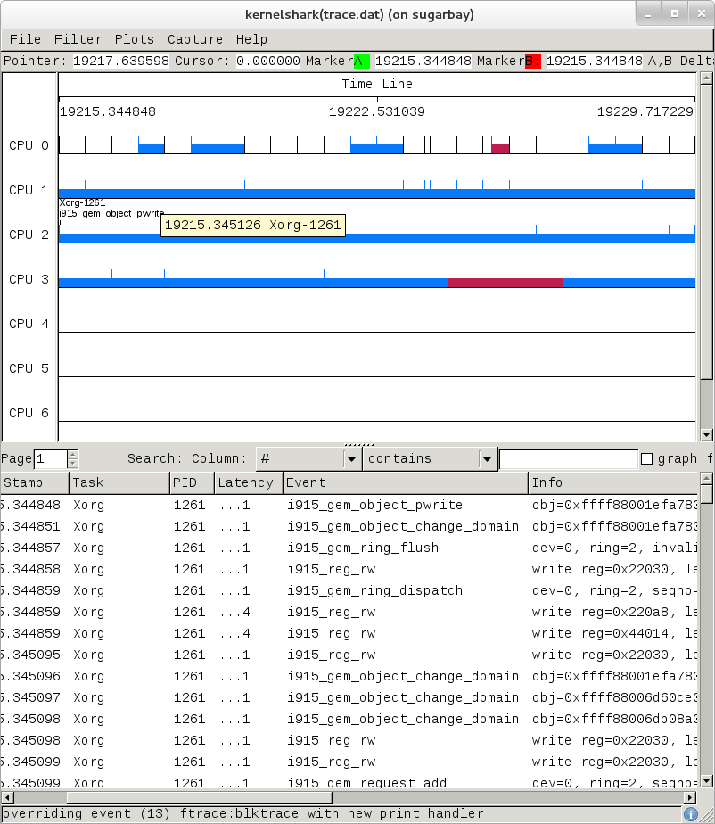
Here's another example, this time a display resulting from tracing all
events:

The tool is pretty self-explanatory, but for more detailed information on navigating through the data, see the KernelShark website.
3.2.5 ftrace Documentation
The documentation for ftrace can be found in the kernel Documentation directory:
Documentation/trace/ftrace.txt
The documentation for the trace event subsystem can also be found in the kernel Documentation directory:
Documentation/trace/events.txt
A nice series of articles on using ftrace and trace-cmd are available at LWN:
See also KernelShark's documentation for further usage details.
An amusing yet useful README (a tracing mini-How-to) can be found in
/sys/kernel/debug/tracing/README.
3.3 SystemTap
SystemTap is a system-wide script-based tracing and profiling tool.
SystemTap scripts are C-like programs that are executed in the kernel to gather / print / aggregate data extracted from the context they end up being called under.
For example, this probe from the SystemTap
tutorial just prints a
line every time any process on the system runs open() on a file. For each line,
it prints the executable name of the program that opened the file, along
with its PID, and the name of the file it opened (or tried to open), which it
extracts from the argument string (argstr) of the open system call.
probe syscall.open
{
printf ("%s(%d) open (%s)\n", execname(), pid(), argstr)
}
probe timer.ms(4000) # after 4 seconds
{
exit ()
}
Normally, to execute this
probe, you'd just install SystemTap on the system you want to probe,
and directly run the probe on that system e.g. assuming the name of the
file containing the above text is trace_open.stp:
# stap trace_open.stp
What SystemTap does under the covers to run this probe is 1) parse and convert the probe to an equivalent "C" form, 2) compile the "C" form into a kernel module, 3) insert the module into the kernel, which arms it, and 4) collect the data generated by the probe and display it to the user.
In order to accomplish steps 1 and 2, the stap program needs access to
the kernel build system that produced the kernel that the probed system
is running. In the case of a typical embedded system (the "target"), the
kernel build system unfortunately isn't typically part of the image
running on the target. It is normally available on the "host" system
that produced the target image however; in such cases, steps 1 and 2 are
executed on the host system, and steps 3 and 4 are executed on the
target system, using only the SystemTap "runtime".
The SystemTap support in Yocto assumes that only steps 3 and 4 are run on the target; it is possible to do everything on the target, but this section assumes only the typical embedded use-case.
Therefore, what you need to do in order to run a SystemTap script on the target is to 1) on the host system, compile the probe into a kernel module that makes sense to the target, 2) copy the module onto the target system and 3) insert the module into the target kernel, which arms it, and 4) collect the data generated by the probe and display it to the user.
3.3.1 SystemTap Setup
Those are many steps and details, but fortunately Yocto
includes a script called crosstap that will take care of those
details, allowing you to just execute a SystemTap script on the remote
target, with arguments if necessary.
In order to do this from a remote host, however, you need to have access
to the build for the image you booted. The crosstap script provides
details on how to do this if you run the script on the host without
having done a build:
$ crosstap root@192.168.1.88 trace_open.stp
Error: No target kernel build found.
Did you forget to create a local build of your image?
'crosstap' requires a local SDK build of the target system (or a build that includes 'tools-profile') in order to build kernel modules that can probe the target system.
Practically speaking, that means you need to do the following:
If you're running a pre-built image, download the release and/or BSP tarballs used to build the image.
If you're working from git sources, just clone the metadata and BSP layers needed to build the image you'll be booting.
Make sure you're properly set up to build a new image (see the BSP README and/or the widely available basic documentation that discusses how to build images).
Build an
-sdkversion of the image e.g.:$ bitbake core-image-sato-sdk
Or build a non-SDK image but include the profiling tools (add
tools-profileto the EXTRA_IMAGE_FEATURES variable):$ bitbake core-image-sato
Once you've build the image on the host system, you're ready to boot it (or the equivalent pre-built image) and use
crosstapto probe it (you need to source the environment as usual first):$ source oe-init-build-env $ cd ~/my/systemtap/scripts $ crosstap root@192.168.1.xxx myscript.stp
Nota
SystemTap, which uses crosstap, assumes you can establish an SSH
connection to the remote target. Please refer to the crosstap wiki
page for details on verifying SSH connections. Also, the ability to SSH
into the target system is not enabled by default in *-minimal images.
Therefore, what you need to do is build an SDK image or image with
tools-profile as detailed in the "General Setup"
section of this manual, and boot the resulting target image.
Nota
If you have a Build Directory containing multiple machines, you need
to have the MACHINE you're connecting to selected, and
the kernel in that machine's Build Directory must match the kernel on
the booted system exactly, or you'll get the above crosstap message
when you try to call a script.
3.3.2 Running a Script on a Target
Once you've done that, you should be able to run a SystemTap script on the target:
$ cd /path/to/yocto
$ source oe-init-build-env
### Shell environment set up for builds. ###
You can now run 'bitbake <target>'
Common targets are:
core-image-minimal
core-image-sato
meta-toolchain
meta-ide-support
You can also run generated QEMU images with a command like 'runqemu qemux86-64'
Once you've done that, you can cd to whatever
directory contains your scripts and use crosstap to run the script:
$ cd /path/to/my/systemap/script
$ crosstap root@192.168.7.2 trace_open.stp
If you get an error connecting to the target e.g.:
$ crosstap root@192.168.7.2 trace_open.stp
error establishing ssh connection on remote 'root@192.168.7.2'
Try connecting to the target through SSH and see what happens:
$ ssh root@192.168.7.2
Connection problems are often due specifying a wrong IP address or having a host key
verification error.
If everything worked as planned, you should see something like this (enter the password when prompted, or press enter if it's set up to use no password):
$ crosstap root@192.168.7.2 trace_open.stp
root@192.168.7.2's password:
matchbox-termin(1036) open ("/tmp/vte3FS2LW", O_RDWR|O_CREAT|O_EXCL|O_LARGEFILE, 0600)
matchbox-termin(1036) open ("/tmp/vteJMC7LW", O_RDWR|O_CREAT|O_EXCL|O_LARGEFILE, 0600)
3.3.3 SystemTap Documentation
The SystemTap language reference can be found here: SystemTap Language Reference
Links to other SystemTap documents, tutorials, and examples can be found here: SystemTap documentation page
3.4 Sysprof
Sysprof is an easy to use system-wide profiler that consists of a single window with three panes and a few buttons which allow you to start, stop, and view the profile from one place.
3.4.1 Sysprof Setup
For this section, we'll assume you've already performed the basic setup outlined in the "General Setup" section.
Sysprof is a GUI-based application that runs on the target system. For the rest
of this document we assume you're connected to the host through SSH and will be
running Sysprof on the target (you can use the -X option to ssh and
have the Sysprof GUI run on the target but display remotely on the host
if you want).
3.4.2 Basic Sysprof Usage
To start profiling the system, you just press the Start button. To
stop profiling and to start viewing the profile data in one easy step,
press the Profile button.
Once you've pressed the profile button, the three panes will fill up with profiling data:

The left pane shows a list of functions and processes. Selecting one of those expands that function in the right pane, showing all its callees. Note that this caller-oriented display is essentially the inverse of perf's default callee-oriented call chain display.
In the screenshot above, we're focusing on __copy_to_user_ll() and
looking up the call chain we can see that one of the callers of
__copy_to_user_ll is sys_read() and the complete call path between them.
Notice that this is essentially a portion of the same information we saw
in the perf display shown in the perf section of this page.

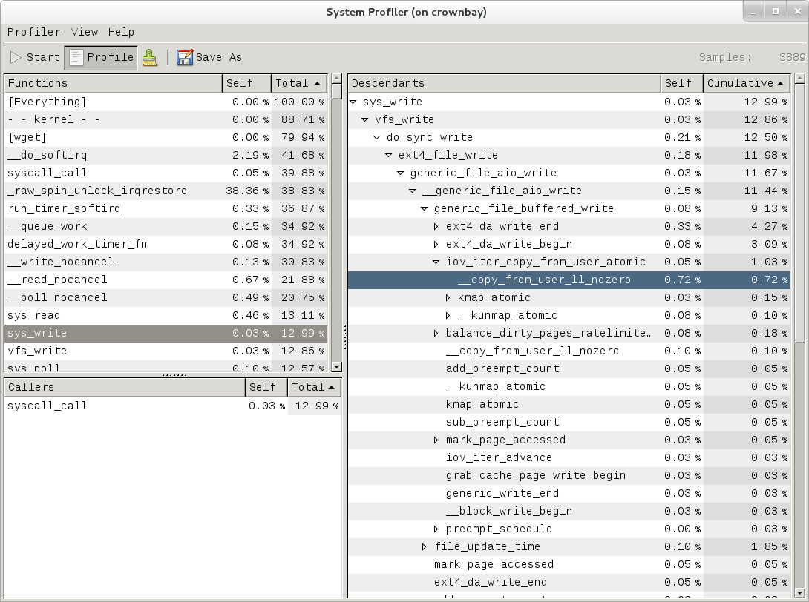
Similarly, the above is a snapshot of the Sysprof display of a
copy-from-user call chain.
Finally, looking at the third Sysprof pane in the lower left, we can see
a list of all the callers of a particular function selected in the top
left pane. In this case, the lower pane is showing all the callers of
__mark_inode_dirty:

Double-clicking on one of those functions will in turn change the focus to the selected function, and so on.
3.4.3 Sysprof Documentation
There doesn't seem to be any documentation for Sysprof, but maybe that's because it's pretty self-explanatory. The Sysprof website, however, is here: Sysprof, System-wide Performance Profiler for Linux
3.5 LTTng (Linux Trace Toolkit, next generation)
3.5.1 LTTng Setup
For this section, we'll assume you've already performed the basic setup outlined in the "General Setup" section. LTTng is run on the target system by connecting to it through SSH.
3.5.2 Collecting and Viewing Traces
Once you've applied the above commits and built and booted your image
(you need to build the core-image-sato-sdk image or use one of the other
methods described in the "General Setup" section), you're ready to start
tracing.
3.5.2.1 Collecting and viewing a trace on the target (inside a shell)
First, from the host, connect to the target through SSH:
$ ssh -l root 192.168.1.47
The authenticity of host '192.168.1.47 (192.168.1.47)' can't be established.
RSA key fingerprint is 23:bd:c8:b1:a8:71:52:00:ee:00:4f:64:9e:10:b9:7e.
Are you sure you want to continue connecting (yes/no)? yes
Warning: Permanently added '192.168.1.47' (RSA) to the list of known hosts.
root@192.168.1.47's password:
Once on the target, use these steps to create a trace:
root@crownbay:~# lttng create
Spawning a session daemon
Session auto-20121015-232120 created.
Traces will be written in /home/root/lttng-traces/auto-20121015-232120
Enable the events you want to trace (in this case all kernel events):
root@crownbay:~# lttng enable-event --kernel --all
All kernel events are enabled in channel channel0
Start the trace:
root@crownbay:~# lttng start
Tracing started for session auto-20121015-232120
And then stop the trace after awhile or after running a particular workload that you want to trace:
root@crownbay:~# lttng stop
Tracing stopped for session auto-20121015-232120
You can now view the trace in text form on the target:
root@crownbay:~# lttng view
[23:21:56.989270399] (+?.?????????) sys_geteuid: { 1 }, { }
[23:21:56.989278081] (+0.000007682) exit_syscall: { 1 }, { ret = 0 }
[23:21:56.989286043] (+0.000007962) sys_pipe: { 1 }, { fildes = 0xB77B9E8C }
[23:21:56.989321802] (+0.000035759) exit_syscall: { 1 }, { ret = 0 }
[23:21:56.989329345] (+0.000007543) sys_mmap_pgoff: { 1 }, { addr = 0x0, len = 10485760, prot = 3, flags = 131362, fd = 4294967295, pgoff = 0 }
[23:21:56.989351694] (+0.000022349) exit_syscall: { 1 }, { ret = -1247805440 }
[23:21:56.989432989] (+0.000081295) sys_clone: { 1 }, { clone_flags = 0x411, newsp = 0xB5EFFFE4, parent_tid = 0xFFFFFFFF, child_tid = 0x0 }
[23:21:56.989477129] (+0.000044140) sched_stat_runtime: { 1 }, { comm = "lttng-consumerd", tid = 1193, runtime = 681660, vruntime = 43367983388 }
[23:21:56.989486697] (+0.000009568) sched_migrate_task: { 1 }, { comm = "lttng-consumerd", tid = 1193, prio = 20, orig_cpu = 1, dest_cpu = 1 }
[23:21:56.989508418] (+0.000021721) hrtimer_init: { 1 }, { hrtimer = 3970832076, clockid = 1, mode = 1 }
[23:21:56.989770462] (+0.000262044) hrtimer_cancel: { 1 }, { hrtimer = 3993865440 }
[23:21:56.989771580] (+0.000001118) hrtimer_cancel: { 0 }, { hrtimer = 3993812192 }
[23:21:56.989776957] (+0.000005377) hrtimer_expire_entry: { 1 }, { hrtimer = 3993865440, now = 79815980007057, function = 3238465232 }
[23:21:56.989778145] (+0.000001188) hrtimer_expire_entry: { 0 }, { hrtimer = 3993812192, now = 79815980008174, function = 3238465232 }
[23:21:56.989791695] (+0.000013550) softirq_raise: { 1 }, { vec = 1 }
[23:21:56.989795396] (+0.000003701) softirq_raise: { 0 }, { vec = 1 }
[23:21:56.989800635] (+0.000005239) softirq_raise: { 0 }, { vec = 9 }
[23:21:56.989807130] (+0.000006495) sched_stat_runtime: { 1 }, { comm = "lttng-consumerd", tid = 1193, runtime = 330710, vruntime = 43368314098 }
[23:21:56.989809993] (+0.000002863) sched_stat_runtime: { 0 }, { comm = "lttng-sessiond", tid = 1181, runtime = 1015313, vruntime = 36976733240 }
[23:21:56.989818514] (+0.000008521) hrtimer_expire_exit: { 0 }, { hrtimer = 3993812192 }
[23:21:56.989819631] (+0.000001117) hrtimer_expire_exit: { 1 }, { hrtimer = 3993865440 }
[23:21:56.989821866] (+0.000002235) hrtimer_start: { 0 }, { hrtimer = 3993812192, function = 3238465232, expires = 79815981000000, softexpires = 79815981000000 }
[23:21:56.989822984] (+0.000001118) hrtimer_start: { 1 }, { hrtimer = 3993865440, function = 3238465232, expires = 79815981000000, softexpires = 79815981000000 }
[23:21:56.989832762] (+0.000009778) softirq_entry: { 1 }, { vec = 1 }
[23:21:56.989833879] (+0.000001117) softirq_entry: { 0 }, { vec = 1 }
[23:21:56.989838069] (+0.000004190) timer_cancel: { 1 }, { timer = 3993871956 }
[23:21:56.989839187] (+0.000001118) timer_cancel: { 0 }, { timer = 3993818708 }
[23:21:56.989841492] (+0.000002305) timer_expire_entry: { 1 }, { timer = 3993871956, now = 79515980, function = 3238277552 }
[23:21:56.989842819] (+0.000001327) timer_expire_entry: { 0 }, { timer = 3993818708, now = 79515980, function = 3238277552 }
[23:21:56.989854831] (+0.000012012) sched_stat_runtime: { 1 }, { comm = "lttng-consumerd", tid = 1193, runtime = 49237, vruntime = 43368363335 }
[23:21:56.989855949] (+0.000001118) sched_stat_runtime: { 0 }, { comm = "lttng-sessiond", tid = 1181, runtime = 45121, vruntime = 36976778361 }
[23:21:56.989861257] (+0.000005308) sched_stat_sleep: { 1 }, { comm = "kworker/1:1", tid = 21, delay = 9451318 }
[23:21:56.989862374] (+0.000001117) sched_stat_sleep: { 0 }, { comm = "kworker/0:0", tid = 4, delay = 9958820 }
[23:21:56.989868241] (+0.000005867) sched_wakeup: { 0 }, { comm = "kworker/0:0", tid = 4, prio = 120, success = 1, target_cpu = 0 }
[23:21:56.989869358] (+0.000001117) sched_wakeup: { 1 }, { comm = "kworker/1:1", tid = 21, prio = 120, success = 1, target_cpu = 1 }
[23:21:56.989877460] (+0.000008102) timer_expire_exit: { 1 }, { timer = 3993871956 }
[23:21:56.989878577] (+0.000001117) timer_expire_exit: { 0 }, { timer = 3993818708 }
.
.
.
You can now safely destroy the trace
session (note that this doesn't delete the trace --- it's still there in
~/lttng-traces):
root@crownbay:~# lttng destroy
Session auto-20121015-232120 destroyed at /home/root
Note that the trace is saved in a directory of the same name as returned by
lttng create, under the ~/lttng-traces directory (note that you can change this by
supplying your own name to lttng create):
root@crownbay:~# ls -al ~/lttng-traces
drwxrwx--- 3 root root 1024 Oct 15 23:21 .
drwxr-xr-x 5 root root 1024 Oct 15 23:57 ..
drwxrwx--- 3 root root 1024 Oct 15 23:21 auto-20121015-232120
3.5.2.2 Collecting and viewing a user space trace on the target (inside a shell)
For LTTng user space tracing, you need to have a properly instrumented
user space program. For this example, we'll use the hello test program
generated by the lttng-ust build.
The hello test program isn't installed on the root filesystem by the lttng-ust
build, so we need to copy it over manually. First cd into the build
directory that contains the hello executable:
$ cd build/tmp/work/core2_32-poky-linux/lttng-ust/2.0.5-r0/git/tests/hello/.libs
Copy that over to the target machine:
$ scp hello root@192.168.1.20:
You now have the instrumented LTTng "hello world" test program on the target, ready to test.
First, from the host, connect to the target through SSH:
$ ssh -l root 192.168.1.47
The authenticity of host '192.168.1.47 (192.168.1.47)' can't be established.
RSA key fingerprint is 23:bd:c8:b1:a8:71:52:00:ee:00:4f:64:9e:10:b9:7e.
Are you sure you want to continue connecting (yes/no)? yes
Warning: Permanently added '192.168.1.47' (RSA) to the list of known hosts.
root@192.168.1.47's password:
Once on the target, use these steps to create a trace:
root@crownbay:~# lttng create
Session auto-20190303-021943 created.
Traces will be written in /home/root/lttng-traces/auto-20190303-021943
Enable the events you want to trace (in this case all user space events):
root@crownbay:~# lttng enable-event --userspace --all
All UST events are enabled in channel channel0
Start the trace:
root@crownbay:~# lttng start
Tracing started for session auto-20190303-021943
Run the instrumented "hello world" program:
root@crownbay:~# ./hello
Hello, World!
Tracing... done.
And then stop the trace after awhile or after running a particular workload that you want to trace:
root@crownbay:~# lttng stop
Tracing stopped for session auto-20190303-021943
You can now view the trace in text form on the target:
root@crownbay:~# lttng view
[02:31:14.906146544] (+?.?????????) hello:1424 ust_tests_hello:tptest: { cpu_id = 1 }, { intfield = 0, intfield2 = 0x0, longfield = 0, netintfield = 0, netintfieldhex = 0x0, arrfield1 = [ [0] = 1, [1] = 2, [2] = 3 ], arrfield2 = "test", _seqfield1_length = 4, seqfield1 = [ [0] = 116, [1] = 101, [2] = 115, [3] = 116 ], _seqfield2_length = 4, seqfield2 = "test", stringfield = "test", floatfield = 2222, doublefield = 2, boolfield = 1 }
[02:31:14.906170360] (+0.000023816) hello:1424 ust_tests_hello:tptest: { cpu_id = 1 }, { intfield = 1, intfield2 = 0x1, longfield = 1, netintfield = 1, netintfieldhex = 0x1, arrfield1 = [ [0] = 1, [1] = 2, [2] = 3 ], arrfield2 = "test", _seqfield1_length = 4, seqfield1 = [ [0] = 116, [1] = 101, [2] = 115, [3] = 116 ], _seqfield2_length = 4, seqfield2 = "test", stringfield = "test", floatfield = 2222, doublefield = 2, boolfield = 1 }
[02:31:14.906183140] (+0.000012780) hello:1424 ust_tests_hello:tptest: { cpu_id = 1 }, { intfield = 2, intfield2 = 0x2, longfield = 2, netintfield = 2, netintfieldhex = 0x2, arrfield1 = [ [0] = 1, [1] = 2, [2] = 3 ], arrfield2 = "test", _seqfield1_length = 4, seqfield1 = [ [0] = 116, [1] = 101, [2] = 115, [3] = 116 ], _seqfield2_length = 4, seqfield2 = "test", stringfield = "test", floatfield = 2222, doublefield = 2, boolfield = 1 }
[02:31:14.906194385] (+0.000011245) hello:1424 ust_tests_hello:tptest: { cpu_id = 1 }, { intfield = 3, intfield2 = 0x3, longfield = 3, netintfield = 3, netintfieldhex = 0x3, arrfield1 = [ [0] = 1, [1] = 2, [2] = 3 ], arrfield2 = "test", _seqfield1_length = 4, seqfield1 = [ [0] = 116, [1] = 101, [2] = 115, [3] = 116 ], _seqfield2_length = 4, seqfield2 = "test", stringfield = "test", floatfield = 2222, doublefield = 2, boolfield = 1 }
.
.
.
You can now safely destroy the trace session (note that this doesn't delete the
trace --- it's still there in ~/lttng-traces):
root@crownbay:~# lttng destroy
Session auto-20190303-021943 destroyed at /home/root
3.5.3 LTTng Documentation
You can find the primary LTTng Documentation on the LTTng Documentation site. The documentation on this site is appropriate for intermediate to advanced software developers who are working in a Linux environment and are interested in efficient software tracing.
For information on LTTng in general, visit the LTTng Project site. You can find a "Getting Started" link on this site that takes you to an LTTng Quick Start.
3.6 blktrace
blktrace is a tool for tracing and reporting low-level disk I/O. blktrace provides the tracing half of the equation; its output can be piped into the blkparse program, which renders the data in a human-readable form and does some basic analysis:
3.6.1 blktrace Setup
For this section, we'll assume you've already performed the basic setup outlined in the "General Setup" section.
blktrace is an application that runs on the target system. You can run the entire blktrace and blkparse pipeline on the target, or you can run blktrace in 'listen' mode on the target and have blktrace and blkparse collect and analyze the data on the host (see the "Using blktrace Remotely" section below). For the rest of this section we assume you've to the host through SSH and will be running blktrace on the target.
3.6.2 Basic blktrace Usage
To record a trace, just run the blktrace command, giving it the name
of the block device you want to trace activity on:
root@crownbay:~# blktrace /dev/sdc
In another shell, execute a workload you want to trace:
root@crownbay:/media/sdc# rm linux-2.6.19.2.tar.bz2; wget https://downloads.yoctoproject.org/mirror/sources/linux-2.6.19.2.tar.bz2; sync
Connecting to downloads.yoctoproject.org (140.211.169.59:80)
linux-2.6.19.2.tar.b 100% \|*******************************\| 41727k 0:00:00 ETA
Press Ctrl-C in the blktrace shell to stop the trace. It
will display how many events were logged, along with the per-cpu file
sizes (blktrace records traces in per-cpu kernel buffers and just
dumps them to user space for blkparse to merge and sort later):
^C=== sdc ===
CPU 0: 7082 events, 332 KiB data
CPU 1: 1578 events, 74 KiB data
Total: 8660 events (dropped 0), 406 KiB data
If you examine the files saved to disk, you see multiple files, one per CPU and with the device name as the first part of the filename:
root@crownbay:~# ls -al
drwxr-xr-x 6 root root 1024 Oct 27 22:39 .
drwxr-sr-x 4 root root 1024 Oct 26 18:24 ..
-rw-r--r-- 1 root root 339938 Oct 27 22:40 sdc.blktrace.0
-rw-r--r-- 1 root root 75753 Oct 27 22:40 sdc.blktrace.1
To view the trace events, just call blkparse in the directory
containing the trace files, giving it the device name that forms the
first part of the filenames:
root@crownbay:~# blkparse sdc
8,32 1 1 0.000000000 1225 Q WS 3417048 + 8 [jbd2/sdc-8]
8,32 1 2 0.000025213 1225 G WS 3417048 + 8 [jbd2/sdc-8]
8,32 1 3 0.000033384 1225 P N [jbd2/sdc-8]
8,32 1 4 0.000043301 1225 I WS 3417048 + 8 [jbd2/sdc-8]
8,32 1 0 0.000057270 0 m N cfq1225 insert_request
8,32 1 0 0.000064813 0 m N cfq1225 add_to_rr
8,32 1 5 0.000076336 1225 U N [jbd2/sdc-8] 1
8,32 1 0 0.000088559 0 m N cfq workload slice:150
8,32 1 0 0.000097359 0 m N cfq1225 set_active wl_prio:0 wl_type:1
8,32 1 0 0.000104063 0 m N cfq1225 Not idling. st->count:1
8,32 1 0 0.000112584 0 m N cfq1225 fifo= (null)
8,32 1 0 0.000118730 0 m N cfq1225 dispatch_insert
8,32 1 0 0.000127390 0 m N cfq1225 dispatched a request
8,32 1 0 0.000133536 0 m N cfq1225 activate rq, drv=1
8,32 1 6 0.000136889 1225 D WS 3417048 + 8 [jbd2/sdc-8]
8,32 1 7 0.000360381 1225 Q WS 3417056 + 8 [jbd2/sdc-8]
8,32 1 8 0.000377422 1225 G WS 3417056 + 8 [jbd2/sdc-8]
8,32 1 9 0.000388876 1225 P N [jbd2/sdc-8]
8,32 1 10 0.000397886 1225 Q WS 3417064 + 8 [jbd2/sdc-8]
8,32 1 11 0.000404800 1225 M WS 3417064 + 8 [jbd2/sdc-8]
8,32 1 12 0.000412343 1225 Q WS 3417072 + 8 [jbd2/sdc-8]
8,32 1 13 0.000416533 1225 M WS 3417072 + 8 [jbd2/sdc-8]
8,32 1 14 0.000422121 1225 Q WS 3417080 + 8 [jbd2/sdc-8]
8,32 1 15 0.000425194 1225 M WS 3417080 + 8 [jbd2/sdc-8]
8,32 1 16 0.000431968 1225 Q WS 3417088 + 8 [jbd2/sdc-8]
8,32 1 17 0.000435251 1225 M WS 3417088 + 8 [jbd2/sdc-8]
8,32 1 18 0.000440279 1225 Q WS 3417096 + 8 [jbd2/sdc-8]
8,32 1 19 0.000443911 1225 M WS 3417096 + 8 [jbd2/sdc-8]
8,32 1 20 0.000450336 1225 Q WS 3417104 + 8 [jbd2/sdc-8]
8,32 1 21 0.000454038 1225 M WS 3417104 + 8 [jbd2/sdc-8]
8,32 1 22 0.000462070 1225 Q WS 3417112 + 8 [jbd2/sdc-8]
8,32 1 23 0.000465422 1225 M WS 3417112 + 8 [jbd2/sdc-8]
8,32 1 24 0.000474222 1225 I WS 3417056 + 64 [jbd2/sdc-8]
8,32 1 0 0.000483022 0 m N cfq1225 insert_request
8,32 1 25 0.000489727 1225 U N [jbd2/sdc-8] 1
8,32 1 0 0.000498457 0 m N cfq1225 Not idling. st->count:1
8,32 1 0 0.000503765 0 m N cfq1225 dispatch_insert
8,32 1 0 0.000512914 0 m N cfq1225 dispatched a request
8,32 1 0 0.000518851 0 m N cfq1225 activate rq, drv=2
.
.
.
8,32 0 0 58.515006138 0 m N cfq3551 complete rqnoidle 1
8,32 0 2024 58.516603269 3 C WS 3156992 + 16 [0]
8,32 0 0 58.516626736 0 m N cfq3551 complete rqnoidle 1
8,32 0 0 58.516634558 0 m N cfq3551 arm_idle: 8 group_idle: 0
8,32 0 0 58.516636933 0 m N cfq schedule dispatch
8,32 1 0 58.516971613 0 m N cfq3551 slice expired t=0
8,32 1 0 58.516982089 0 m N cfq3551 sl_used=13 disp=6 charge=13 iops=0 sect=80
8,32 1 0 58.516985511 0 m N cfq3551 del_from_rr
8,32 1 0 58.516990819 0 m N cfq3551 put_queue
CPU0 (sdc):
Reads Queued: 0, 0KiB Writes Queued: 331, 26,284KiB
Read Dispatches: 0, 0KiB Write Dispatches: 485, 40,484KiB
Reads Requeued: 0 Writes Requeued: 0
Reads Completed: 0, 0KiB Writes Completed: 511, 41,000KiB
Read Merges: 0, 0KiB Write Merges: 13, 160KiB
Read depth: 0 Write depth: 2
IO unplugs: 23 Timer unplugs: 0
CPU1 (sdc):
Reads Queued: 0, 0KiB Writes Queued: 249, 15,800KiB
Read Dispatches: 0, 0KiB Write Dispatches: 42, 1,600KiB
Reads Requeued: 0 Writes Requeued: 0
Reads Completed: 0, 0KiB Writes Completed: 16, 1,084KiB
Read Merges: 0, 0KiB Write Merges: 40, 276KiB
Read depth: 0 Write depth: 2
IO unplugs: 30 Timer unplugs: 1
Total (sdc):
Reads Queued: 0, 0KiB Writes Queued: 580, 42,084KiB
Read Dispatches: 0, 0KiB Write Dispatches: 527, 42,084KiB
Reads Requeued: 0 Writes Requeued: 0
Reads Completed: 0, 0KiB Writes Completed: 527, 42,084KiB
Read Merges: 0, 0KiB Write Merges: 53, 436KiB
IO unplugs: 53 Timer unplugs: 1
Throughput (R/W): 0KiB/s / 719KiB/s
Events (sdc): 6,592 entries
Skips: 0 forward (0 - 0.0%)
Input file sdc.blktrace.0 added
Input file sdc.blktrace.1 added
The report shows each event that was found in the blktrace data, along with a summary of the overall block I/O traffic during the run. You can look at the blkparse(1) manual page to learn the meaning of each field displayed in the trace listing.
3.6.2.1 Live Mode
blktrace and blkparse are designed from the ground up to be able to operate together in a "pipe mode" where the standard output of blktrace can be fed directly into the standard input of blkparse:
root@crownbay:~# blktrace /dev/sdc -o - | blkparse -i -
This enables long-lived tracing sessions to run without writing anything to disk, and allows the user to look for certain conditions in the trace data in 'real-time' by viewing the trace output as it scrolls by on the screen or by passing it along to yet another program in the pipeline such as grep which can be used to identify and capture conditions of interest.
There's actually another blktrace command that implements the above pipeline as a single command, so the user doesn't have to bother typing in the above command sequence:
root@crownbay:~# btrace /dev/sdc
3.6.2.2 Using blktrace Remotely
Because blktrace traces block I/O and at the same time normally writes its trace data to a block device, and in general because it's not really a great idea to make the device being traced the same as the device the tracer writes to, blktrace provides a way to trace without perturbing the traced device at all by providing native support for sending all trace data over the network.
To have blktrace operate in this mode, start blktrace in server mode on the host system, which is going to store the captured data:
$ blktrace -l
server: waiting for connections...
On the target system that is going to be traced, start blktrace in client mode with the -h option to connect to the host system, also passing it the device to trace:
root@crownbay:~# blktrace -d /dev/sdc -h 192.168.1.43
blktrace: connecting to 192.168.1.43
blktrace: connected!
On the host system, you should see this:
server: connection from 192.168.1.43
In another shell, execute a workload you want to trace:
root@crownbay:/media/sdc# rm linux-2.6.19.2.tar.bz2; wget https://downloads.yoctoproject.org/mirror/sources/linux-2.6.19.2.tar.bz2; sync
Connecting to downloads.yoctoproject.org (140.211.169.59:80)
linux-2.6.19.2.tar.b 100% \|*******************************\| 41727k 0:00:00 ETA
When it's done, do a Ctrl-C on the target system to stop the
trace:
^C=== sdc ===
CPU 0: 7691 events, 361 KiB data
CPU 1: 4109 events, 193 KiB data
Total: 11800 events (dropped 0), 554 KiB data
On the host system, you should also see a trace summary for the trace just ended:
server: end of run for 192.168.1.43:sdc
=== sdc ===
CPU 0: 7691 events, 361 KiB data
CPU 1: 4109 events, 193 KiB data
Total: 11800 events (dropped 0), 554 KiB data
The blktrace instance on the host will
save the target output inside a <hostname>-<timestamp> directory:
$ ls -al
drwxr-xr-x 10 root root 1024 Oct 28 02:40 .
drwxr-sr-x 4 root root 1024 Oct 26 18:24 ..
drwxr-xr-x 2 root root 1024 Oct 28 02:40 192.168.1.43-2012-10-28-02:40:56
cd into that directory to see the output files:
$ ls -l
-rw-r--r-- 1 root root 369193 Oct 28 02:44 sdc.blktrace.0
-rw-r--r-- 1 root root 197278 Oct 28 02:44 sdc.blktrace.1
And run blkparse on the host system using the device name:
$ blkparse sdc
8,32 1 1 0.000000000 1263 Q RM 6016 + 8 [ls]
8,32 1 0 0.000036038 0 m N cfq1263 alloced
8,32 1 2 0.000039390 1263 G RM 6016 + 8 [ls]
8,32 1 3 0.000049168 1263 I RM 6016 + 8 [ls]
8,32 1 0 0.000056152 0 m N cfq1263 insert_request
8,32 1 0 0.000061600 0 m N cfq1263 add_to_rr
8,32 1 0 0.000075498 0 m N cfq workload slice:300
.
.
.
8,32 0 0 177.266385696 0 m N cfq1267 arm_idle: 8 group_idle: 0
8,32 0 0 177.266388140 0 m N cfq schedule dispatch
8,32 1 0 177.266679239 0 m N cfq1267 slice expired t=0
8,32 1 0 177.266689297 0 m N cfq1267 sl_used=9 disp=6 charge=9 iops=0 sect=56
8,32 1 0 177.266692649 0 m N cfq1267 del_from_rr
8,32 1 0 177.266696560 0 m N cfq1267 put_queue
CPU0 (sdc):
Reads Queued: 0, 0KiB Writes Queued: 270, 21,708KiB
Read Dispatches: 59, 2,628KiB Write Dispatches: 495, 39,964KiB
Reads Requeued: 0 Writes Requeued: 0
Reads Completed: 90, 2,752KiB Writes Completed: 543, 41,596KiB
Read Merges: 0, 0KiB Write Merges: 9, 344KiB
Read depth: 2 Write depth: 2
IO unplugs: 20 Timer unplugs: 1
CPU1 (sdc):
Reads Queued: 688, 2,752KiB Writes Queued: 381, 20,652KiB
Read Dispatches: 31, 124KiB Write Dispatches: 59, 2,396KiB
Reads Requeued: 0 Writes Requeued: 0
Reads Completed: 0, 0KiB Writes Completed: 11, 764KiB
Read Merges: 598, 2,392KiB Write Merges: 88, 448KiB
Read depth: 2 Write depth: 2
IO unplugs: 52 Timer unplugs: 0
Total (sdc):
Reads Queued: 688, 2,752KiB Writes Queued: 651, 42,360KiB
Read Dispatches: 90, 2,752KiB Write Dispatches: 554, 42,360KiB
Reads Requeued: 0 Writes Requeued: 0
Reads Completed: 90, 2,752KiB Writes Completed: 554, 42,360KiB
Read Merges: 598, 2,392KiB Write Merges: 97, 792KiB
IO unplugs: 72 Timer unplugs: 1
Throughput (R/W): 15KiB/s / 238KiB/s
Events (sdc): 9,301 entries
Skips: 0 forward (0 - 0.0%)
You should see the trace events and summary just as you would have if you'd run the same command on the target.
3.6.2.3 Tracing Block I/O via 'ftrace'
It's also possible to trace block I/O using only The 'trace events' Subsystem, which can be useful for casual tracing if you don't want to bother dealing with the user space tools.
To enable tracing for a given device, use /sys/block/xxx/trace/enable,
where xxx is the device name. This for example enables tracing for
/dev/sdc:
root@crownbay:/sys/kernel/debug/tracing# echo 1 > /sys/block/sdc/trace/enable
Once you've selected the device(s) you want
to trace, selecting the blk tracer will turn the blk tracer on:
root@crownbay:/sys/kernel/debug/tracing# cat available_tracers
blk function_graph function nop
root@crownbay:/sys/kernel/debug/tracing# echo blk > current_tracer
Execute the workload you're interested in:
root@crownbay:/sys/kernel/debug/tracing# cat /media/sdc/testfile.txt
And look at the output (note here that we're using trace_pipe instead of
trace to capture this trace --- this allows us to wait around on the pipe
for data to appear):
root@crownbay:/sys/kernel/debug/tracing# cat trace_pipe
cat-3587 [001] d..1 3023.276361: 8,32 Q R 1699848 + 8 [cat]
cat-3587 [001] d..1 3023.276410: 8,32 m N cfq3587 alloced
cat-3587 [001] d..1 3023.276415: 8,32 G R 1699848 + 8 [cat]
cat-3587 [001] d..1 3023.276424: 8,32 P N [cat]
cat-3587 [001] d..2 3023.276432: 8,32 I R 1699848 + 8 [cat]
cat-3587 [001] d..1 3023.276439: 8,32 m N cfq3587 insert_request
cat-3587 [001] d..1 3023.276445: 8,32 m N cfq3587 add_to_rr
cat-3587 [001] d..2 3023.276454: 8,32 U N [cat] 1
cat-3587 [001] d..1 3023.276464: 8,32 m N cfq workload slice:150
cat-3587 [001] d..1 3023.276471: 8,32 m N cfq3587 set_active wl_prio:0 wl_type:2
cat-3587 [001] d..1 3023.276478: 8,32 m N cfq3587 fifo= (null)
cat-3587 [001] d..1 3023.276483: 8,32 m N cfq3587 dispatch_insert
cat-3587 [001] d..1 3023.276490: 8,32 m N cfq3587 dispatched a request
cat-3587 [001] d..1 3023.276497: 8,32 m N cfq3587 activate rq, drv=1
cat-3587 [001] d..2 3023.276500: 8,32 D R 1699848 + 8 [cat]
And this turns off tracing for the specified device:
root@crownbay:/sys/kernel/debug/tracing# echo 0 > /sys/block/sdc/trace/enable
3.6.3 blktrace Documentation
Online versions of the manual pages for the commands discussed in this section can be found here:
The above manual pages, along with manuals for the other blktrace utilities
(btt, blkiomon, etc) can be found in the /doc directory of the blktrace
tools git repository:
$ git clone https://git.kernel.org/pub/scm/linux/kernel/git/axboe/blktrace.git